SiO₂ Melt Curve Fits#
We use a 3 part fit to generate a fiducial model melt curve from 14 to 6000 GPa.
15-55 GPa: Fit to static lab data; rms=154 K
55-513 GPa: Using 2-phase melt curve equation from Geng and Mohn 2024; 1-sigma~200 K
513-6000 GPa: Fit to modified Gonzalez et al. 2016 (used Z method to determine melt curve); rms=207 K
An estimate of the melt curve temperature fit uncertainty is 1σ = ±250 K. Systematic uncertainties related to PBE DFT and static DAC measurements may be greater.
The Gonzalez MC overlapping point with MC24 was shifted upward by about 130 K to intersect the GM2024 melt curve. This is within the error of the melt curves.
Updated 10/21/2026 sts
%%capture
## This cell loads the modules, data, and EOS parameters
## capture magic function hides the output; comment out to see diagnostic info during data load
## Run executable notebook for output
%run -i scripts/set_paths
%run -i scripts/load_modules
%run -i scripts/load_silica_data
%run -i scripts/define_mc
%run -i scripts/define_eos
%run -i scripts/calibrate_decaying_shocks.py
%run -i scripts/load_vapor_domes.py
%run -i scripts/load_liquid_model.py
%run -i scripts/load_solid_models.py
#%run -i scripts/hugoniot-calcs.py
%run -i scripts/intersection.py # intersection function
%run -i scripts/odr_models.py # ODR and model functions # REMOVE
%run -i scripts/set_plotstyle.py # customize matplotlib
%run -i scripts/set_colors.py # custom colors
# this notebook's figure name tag
tag = 'MCF-'
stsmcsmoothorig = deepcopy(stsmcsmooth)
---------------------------------------------------------------------------
FileNotFoundError Traceback (most recent call last)
File ~/work/silica-supplement/silica-supplement/silica-book/scripts/define_eos.py:265
263 fs_fitTus_stv0.outputfitpath = modelfitpath # in load_paths.py
264 fs_fitTus_stv0.filename = 'fs_fitTus_stv_quadratic'
--> 265 fs_fitTus_stv0.loadjson()
266 fs_hug_stv.T = fs_fitTus_stv0.calcf(fs_hug_stv.us) # calculate temperatures on the solid branch Hugoniot
268 # ------- Fused Silica Transitions -----------
269 #
270 # FS Pressure bounds on the Omega data wiggles
File ~/work/silica-supplement/silica-supplement/silica-book/scripts/hpeos_module.py:351, in HPeos_Fit.loadjson(self)
348 def loadjson(self):
349 # read in json formatted fit record file and then reconstruct a dictionary
350 # need to add a function to load the readable version
--> 351 with open(self.outputfitpath+self.filename+'.txt', 'r') as f:
352 filetext = f.readlines()[0] # read in whole file into text
353 datadict = json.loads(filetext) # convert long string into dictionary
FileNotFoundError: [Errno 2] No such file or directory: './model-fits/fs_fitTus_stv_quadratic.txt'
---------------------------------------------------------------------------
NameError Traceback (most recent call last)
File ~/work/silica-supplement/silica-supplement/silica-book/scripts/calibrate_decaying_shocks.py:20
15 qtz_hug_KD.rho = 1/((1/qtz_hug_KD.rho_ref)*(1-(qtz_hug_KD.up/qtz_hug_KD.us))) # kg/m3
18 # Calibrate Millot & Davies unpublished decaying shocks in alpha-quartz, z cut
19 # high pressure uses the liquid branch of the new Hugoniot fit
---> 20 shockdat_list[MDqtz70811['id']].P = np.interp(shockdat_list[MDqtz70811['id']].us,qtz_hug_liq.us,qtz_hug_liq.P)
21 shockdat_list[MDqtz70811['id']].rho = np.interp(shockdat_list[MDqtz70811['id']].us,qtz_hug_liq.us,qtz_hug_liq.rho)
22 shockdat_list[MDqtz70811['id']].up = np.interp(shockdat_list[MDqtz70811['id']].us,qtz_hug_liq.us,qtz_hug_liq.up)
NameError: name 'qtz_hug_liq' is not defined
---------------------------------------------------------------------------
FileNotFoundError Traceback (most recent call last)
File ~/work/silica-supplement/silica-supplement/silica-book/scripts/load_vapor_domes.py:34
32 C16lows = np.loadtxt(silicadatadir+'Connolly-low-cp.csv',delimiter=',',usecols=[0])
33 C16lowt = np.loadtxt(silicadatadir+'Connolly-low-cp.csv',delimiter=',',usecols=[1])
---> 34 C16bdrho = np.loadtxt(silicadatadir+'Connolly-Fig4b-black-dashed-T-rho.csv',delimiter=',',usecols=[0])/1.e3
35 C16bdtemp = np.loadtxt(silicadatadir+'Connolly-Fig4b-black-dashed-T-rho.csv',delimiter=',',usecols=[1])
37 C16sils = np.loadtxt(silicadatadir+'Connolly-SiL-VWRK.csv',delimiter=',',usecols=[0])
File /opt/hostedtoolcache/Python/3.13.16/x64/lib/python3.13/site-packages/numpy/lib/_npyio_impl.py:1395, in loadtxt(fname, dtype, comments, delimiter, converters, skiprows, usecols, unpack, ndmin, encoding, max_rows, quotechar, like)
1392 if isinstance(delimiter, bytes):
1393 delimiter = delimiter.decode('latin1')
-> 1395 arr = _read(fname, dtype=dtype, comment=comment, delimiter=delimiter,
1396 converters=converters, skiplines=skiprows, usecols=usecols,
1397 unpack=unpack, ndmin=ndmin, encoding=encoding,
1398 max_rows=max_rows, quote=quotechar)
1400 return arr
File /opt/hostedtoolcache/Python/3.13.16/x64/lib/python3.13/site-packages/numpy/lib/_npyio_impl.py:1022, in _read(fname, delimiter, comment, quote, imaginary_unit, usecols, skiplines, max_rows, converters, ndmin, unpack, dtype, encoding)
1020 fname = os.fspath(fname)
1021 if isinstance(fname, str):
-> 1022 fh = np.lib._datasource.open(fname, 'rt', encoding=encoding)
1023 if encoding is None:
1024 encoding = getattr(fh, 'encoding', 'latin1')
File /opt/hostedtoolcache/Python/3.13.16/x64/lib/python3.13/site-packages/numpy/lib/_datasource.py:192, in open(path, mode, destpath, encoding, newline)
155 """
156 Open `path` with `mode` and return the file object.
157
(...) 188
189 """
191 ds = DataSource(destpath)
--> 192 return ds.open(path, mode, encoding=encoding, newline=newline)
File /opt/hostedtoolcache/Python/3.13.16/x64/lib/python3.13/site-packages/numpy/lib/_datasource.py:529, in DataSource.open(self, path, mode, encoding, newline)
526 return _file_openers[ext](found, mode=mode,
527 encoding=encoding, newline=newline)
528 else:
--> 529 raise FileNotFoundError(f"{path} not found.")
FileNotFoundError: ../data_silica_db/Connolly-Fig4b-black-dashed-T-rho.csv not found.
Gonzales et al. 2016 - no tweak#
Only fitting points beyond the Geng and Mohn 2024 paper.
The Simons curve fit to this data does not intersect the Geng and Mohn recommended 2-phase fit melt curve.
plt.errorbar(eosdat_list[G16mc['id']].P[5:8],eosdat_list[G16mc['id']].T[5:8],fmt='s--',mfc='white',yerr=eosdat_list[G16mc['id']].T_std[5:8],label=G16mcb['lab']) # cotunnite structure
plt.errorbar(eosdat_list[G16mc['id']].P[8:11],eosdat_list[G16mc['id']].T[8:11],fmt='o--',mfc='white',yerr=eosdat_list[G16mc['id']].T_std[8:11],label=G16mcc['lab']) # Fe2P structure
plt.errorbar(eosdat_list[G16mc['id']].P[::],eosdat_list[G16mc['id']].T[::],fmt='kx',yerr=eosdat_list[G16mc['id']].T_std[::],label=G16mcb['lab']+'all pts')
fitx = eosdat_list[G16mc['id']].P[5:11]
fitf= eosdat_list[G16mc['id']].T[5:11]
fitx_std = eosdat_list[G16mc['id']].P[5:11]*.01
fitf_std = eosdat_list[G16mc['id']].T_std[5:11]
fitrefid = np.full(len(fitx), eosdat_list[G16mc['id']].refidlist[1], dtype=int)
fitreflist=[]
for i in np.unique(fitrefid):
fitreflist.append(str(i)+': '+ref_list[i].reference[0])
# initialize the HPeos_Fit class
sio2_mc_G16 = hp.HPeos_Fit()
sio2_mc_G16.formula = 'SiO2'
sio2_mc_G16.x = fitx
sio2_mc_G16.f = fitf
sio2_mc_G16.x_std = fitx_std
sio2_mc_G16.f_std = fitf_std
sio2_mc_G16.refid = fitrefid
sio2_mc_G16.reflist = fitreflist
sio2_mc_G16.x_var = 'P'
sio2_mc_G16.f_var = 'T'
sio2_mc_G16.x_units = 'GPa'
sio2_mc_G16.f_units = 'K'
sio2_mc_G16.x_desc = 'Pressure'
sio2_mc_G16.f_desc = 'Temperature'
sio2_mc_G16.phase_fit = 'melt curve'
DateTime_in_ISOFormat = datetime.datetime.now(zoneinfo.ZoneInfo('UTC')).isoformat('T', 'seconds') #
sio2_mc_G16.actions = [['Sarah T. Stewart','create',DateTime_in_ISOFormat,'new fit']]
sio2_mc_G16.curvetype = 'simons'
sio2_mc_G16.outputfitpath = outputfitpath # in load_paths.py
sio2_mc_G16.filename = 'SiO2_fitG16_simons'
sio2_mc_G16.a0 = np.asarray([2000,300,.2])
sio2_mc_G16.fit()
print('FIT EOS a = ',sio2_mc_G16.a)
print('FIT EOS cov = ',sio2_mc_G16.cov)
sio2_mc_G16.savejson()
sio2_mc_G16.savereadable()
print('rms = ',sio2_mc_G16.rms)
#plt.errorbar(fitx,fitf,xerr=fitx_std,yerr=fitf_std,fmt='x',label='fitted points')
P_var = np.arange(400,6000,1)
T_var = sio2_mc_G16.calcf(P_var)
plt.plot(P_var,T_var,'r-',label='Fit to G16 >500 GPa')
#plt.plot(stsmcsmooth.P,stsmcsmooth.T,'m-',linewidth=3)
plt.plot(gm24mc.P,gm24mc.T,'-',color='c',label='G24 MC 2phase PBE')
plt.xlabel('Pressure (GPa)')
plt.ylabel('Temperature (GPa)')
plt.xlim(-100,6000)
plt.ylim(2500,22000)
#plt.xlim(0,600)
#plt.ylim(2500,10000)
plt.legend()
plt.show()
x,y=intersection(gm24mc.P,gm24mc.T,P_var,T_var)
print('No intersection: ',x,y)
FIT EOS a = [-6.36271653e+03 3.34234543e+03 2.41679458e-01]
FIT EOS cov = [[ 2.33434555e+06 -1.10998015e+06 2.87368374e+01]
[-1.10998015e+06 5.29325109e+05 -1.37257325e+01]
[ 2.87368374e+01 -1.37257325e+01 3.56260772e-04]]
Saved EOS fit in SiO2_fitG16_simons.txt
Saved EOS fit in readable file SiO2_fitG16_simons-readable.txt
rms = 223.5254658791782
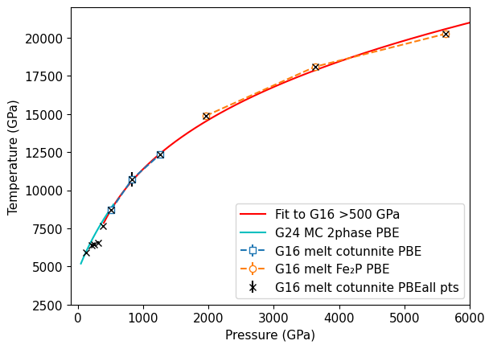
No intersection: [] []
Gonzales et al. 2016 - tweak to intersect GM24#
Shift the lowest pressure point to fall on the GM24 melt curve.
plt.errorbar(eosdat_list[G16mc['id']].P[5:8],eosdat_list[G16mc['id']].T[5:8],fmt='s--',mfc='white',yerr=eosdat_list[G16mc['id']].T_std[5:8],label=G16mcb['lab']) # cotunnite structure
plt.errorbar(eosdat_list[G16mc['id']].P[8:11],eosdat_list[G16mc['id']].T[8:11],fmt='o--',mfc='white',yerr=eosdat_list[G16mc['id']].T_std[8:11],label=G16mcc['lab']) # Fe2P structure
plt.errorbar(eosdat_list[G16mc['id']].P[::],eosdat_list[G16mc['id']].T[::],fmt='kx',yerr=eosdat_list[G16mc['id']].T_std[::],label=G16mcb['lab']+'all pts')
fitx = np.copy(eosdat_list[G16mc['id']].P[5:11])
fitf= np.copy(eosdat_list[G16mc['id']].T[5:11])
print('Original temperature = ',fitf[0])
fitf[0] = np.interp(fitx[0],gm24mc.P,gm24mc.T) # modify G16 lowest point to match GM24 melt curve
print('Modified temperature = ',fitf[0])
fitx_std = eosdat_list[G16mc['id']].P[5:11]*.01
fitf_std = eosdat_list[G16mc['id']].T_std[5:11]
fitrefid = np.full(len(fitx), eosdat_list[G16mc['id']].refidlist[1], dtype=int)
fitreflist=[]
for i in np.unique(fitrefid):
fitreflist.append(str(i)+': '+ref_list[i].reference[0])
# initialize the HPeos_Fit class
sio2_mc_G16mod = hp.HPeos_Fit()
sio2_mc_G16mod.formula = 'SiO2'
sio2_mc_G16mod.x = fitx
sio2_mc_G16mod.f = fitf
sio2_mc_G16mod.x_std = fitx_std
sio2_mc_G16mod.f_std = fitf_std
sio2_mc_G16mod.refid = fitrefid
sio2_mc_G16mod.reflist = fitreflist
sio2_mc_G16mod.x_var = 'P'
sio2_mc_G16mod.f_var = 'T'
sio2_mc_G16mod.x_units = 'GPa'
sio2_mc_G16mod.f_units = 'K'
sio2_mc_G16mod.x_desc = 'Pressure'
sio2_mc_G16mod.f_desc = 'Temperature'
sio2_mc_G16mod.phase_fit = 'melt curve'
DateTime_in_ISOFormat = datetime.datetime.now(zoneinfo.ZoneInfo('UTC')).isoformat('T', 'seconds') #
sio2_mc_G16mod.actions = [['Sarah T. Stewart','create',DateTime_in_ISOFormat,'new fit modified lowest pressure point to intersect Geng & Mohn 2024']]
sio2_mc_G16mod.curvetype = 'simons'
sio2_mc_G16mod.outputfitpath = outputfitpath # in load_paths.py
sio2_mc_G16mod.filename = 'SiO2_fitG16mod_simons'
sio2_mc_G16mod.a0 = np.asarray([2000,300,.2])
sio2_mc_G16mod.fit()
print('FIT EOS a = ',sio2_mc_G16mod.a)
print('FIT EOS cov = ',sio2_mc_G16mod.cov)
sio2_mc_G16mod.savejson()
sio2_mc_G16mod.savereadable()
print('rms = ',sio2_mc_G16mod.rms)
#plt.errorbar(fitx,fitf,xerr=fitx_std,yerr=fitf_std,fmt='x',label='fitted points')
P_var = np.arange(400,6000,1)
T_var = sio2_mc_G16mod.calcf(P_var)
plt.plot(P_var,T_var,'r-',label='Fit to modified G16 >500 GPa')
plt.plot(gm24mc.P,gm24mc.T,'-',color='c',label='G24 MC 2phase PBE')
plt.xlabel('Pressure (GPa)')
plt.ylabel('Temperature (GPa)')
plt.xlim(-100,6000)
plt.ylim(2500,22000)
#plt.xlim(0,600)
#plt.ylim(2500,10000)
plt.legend()
plt.show()
x,y=intersection(gm24mc.P,gm24mc.T,P_var,T_var)
print('Intersection: ',x,y)
Original temperature = 8702.972
Modified temperature = 8835.963323826292
FIT EOS a = [-5.89115354e+03 3.22037586e+03 2.43744935e-01]
FIT EOS cov = [[ 2.24246586e+06 -1.05539146e+06 2.84294101e+01]
[-1.05539146e+06 4.98153601e+05 -1.34401897e+01]
[ 2.84294101e+01 -1.34401897e+01 3.62964657e-04]]
Saved EOS fit in SiO2_fitG16mod_simons.txt
Saved EOS fit in readable file SiO2_fitG16mod_simons-readable.txt
rms = 207.65052530854672
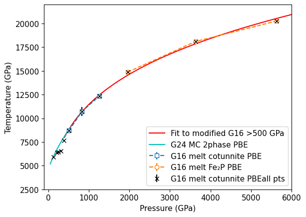
Intersection: [512.8373207] [8847.24674359]
plt.plot(P_var,T_var,'k--',label='Fit to G16 >500 GPa')
plt.plot(P_var,T_var,'r-',label='Fit to G16 >500 GPa + 100K')
x,y=intersection(gm24mc.P,gm24mc.T,P_var,T_var)
p2=x[0]
t2=y[0]
plt.plot(p2,t2,'kD',label='intersection between M24 and modified G16')
print('Intersection point (P,T)=',p2,t2)
#plt.plot(stsmcsmooth.P,stsmcsmooth.T,'m-',linewidth=3)
plt.plot(gm24mc.P,gm24mc.T,'-',color='c',label='G24 MC 2phase PBE')
plt.errorbar(eosdat_list[G16mc['id']].P[5:8],eosdat_list[G16mc['id']].T[5:8],fmt='s--',mfc='white',yerr=eosdat_list[G16mc['id']].T_std[5:8],label=G16mcb['lab']) # cotunnite structure
plt.errorbar(eosdat_list[G16mc['id']].P[8:11],eosdat_list[G16mc['id']].T[8:11],fmt='o--',mfc='white',yerr=eosdat_list[G16mc['id']].T_std[8:11],label=G16mcc['lab']) # Fe2P structure
plt.xlabel('Pressure (GPa)')
plt.ylabel('Temperature (GPa)')
plt.xlim(100,1000)
plt.ylim(500,12000)
plt.legend()
plt.show()
Intersection point (P,T)= 512.8373206970086 8847.24674359435
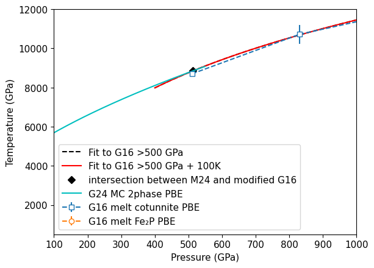
Stishovite low-pressure region melt curve#
Fit Simons equation to static lab experiments for melt curve.
pvar = np.concatenate(([13.7],eosdat_list[S95mcstv['id']].P,eosdat_list[A22mc['id']].P))
tvar = np.concatenate(([3073],eosdat_list[S95mcstv['id']].T,eosdat_list[A22mc['id']].T))
tstd = np.concatenate(([50],eosdat_list[S95mcstv['id']].T_std,eosdat_list[A22mc['id']].T_std)) # Zhang et al. report 50C uncertainty in this range
#ind = np.where((pvar>13.6) & (pvar < 126) & (tvar>3000))
#ind = np.where((pvar>13.6) & (pvar < 50) & (tvar>3000))
ind = np.where((pvar>10) & (pvar < 126))
#ind = np.where((pvar>14) & (pvar < 50))
print(pvar,tvar,tstd)
print(pvar[ind],tvar[ind])
plt.plot(pvar[ind],tvar[ind],'x',markersize=10)
if 1:
# fit lab data for STV steep slope melt curve
fitx = pvar[ind]
fitf = tvar[ind]
fitx_std = np.zeros(len(fitx))+1
fitf_std = tstd[ind]
# fitrefid = np.full(len(fitx), -99, dtype=int)
# fitreflist=[]
# for i in np.unique(fitrefid):
# fitreflist.append(str(i)+': misc')
# per-point source ids, in the same order as pvar = [Zhang TP, S95 points, A22 points]
refZ93 = -1 # Zhang et al. 1993 (not in reference database)
refS95 = eosdat_list[S95mcstv['id']].refidlist[1]
refA22 = eosdat_list[A22mc['id']].refidlist[1]
refall = np.concatenate(([refZ93],
np.full(len(eosdat_list[S95mcstv['id']].P), refS95, dtype=int),
np.full(len(eosdat_list[A22mc['id']].P), refA22, dtype=int)))
fitrefid = refall[ind]
fitreflist = []
for i in np.unique(fitrefid):
if i == refZ93:
fitreflist.append(str(i)+': Zhang, J., Liebermann, R. C., Gasparik, T., Herzberg, C. T., & Fei, Y. '
'(1993). Melting and subsolidus relations of SiO2 at 9-14 GPa. Journal of '
'Geophysical Research: Solid Earth, 98(B11), 19785-19793. '
'https://doi.org/10.1029/93JB02218 (coesite-stishovite-liquid triple point)')
else:
fitreflist.append(str(i)+': '+ref_list[i].reference[0])
# initialize the HPeos_Fit class
sio2_mc_static = hp.HPeos_Fit()
sio2_mc_static.formula = 'SiO2'
sio2_mc_static.x = fitx
sio2_mc_static.f = fitf
sio2_mc_static.x_std = fitx_std
sio2_mc_static.f_std = fitf_std
sio2_mc_static.refid = fitrefid
sio2_mc_static.reflist = fitreflist
sio2_mc_static.x_var = 'P'
sio2_mc_static.f_var = 'T'
sio2_mc_static.x_units = 'GPa'
sio2_mc_static.f_units = 'K'
sio2_mc_static.x_desc = 'Pressure'
sio2_mc_static.f_desc = 'Temperature'
sio2_mc_static.phase_fit = 'melt curve'
DateTime_in_ISOFormat = datetime.datetime.now(zoneinfo.ZoneInfo('UTC')).isoformat('T', 'seconds') #
sio2_mc_static.actions = [['Sarah T. Stewart','create',DateTime_in_ISOFormat,'new fit']]
sio2_mc_static.curvetype = 'simons'
# sio2_mc_static.curvetype = 'cubic'
sio2_mc_static.outputfitpath = outputfitpath # in load_paths.py
sio2_mc_static.filename = 'SiO2_fitstvstatic_simons'
# sio2_mc_static.filename = 'SiO2_fitstvstatic_cubic'
sio2_mc_static.a0 = np.asarray([3000,300,.2])
sio2_mc_static.remlist.append('Fit to static melting data on the stishovite/CaCl2-type melt curve, '
'10 < P < 126 GPa: Zhang et al. (1993) triple point (13.7 GPa, 3073 K, 50 K uncertainty; refid -1), '
'laser-heated DAC data of Shen & Lazor (1995) and Andrault et al. (2022).')
sio2_mc_static.remlist.append('Pressure uncertainty set to 1 GPa for all points.')
sio2_mc_static.fit()
print('FIT EOS a = ',sio2_mc_static.a)
print('FIT EOS cov = ',sio2_mc_static.cov)
sio2_mc_static.savejson()
sio2_mc_static.savereadable()
print('rms = ',sio2_mc_static.rms)
plt.errorbar(fitx,fitf,xerr=fitx_std,yerr=fitf_std,fmt='kP',label='simons fit')
sio2_mc_stv = deepcopy(sio2_mc_static)
# '''Simons function f(x) = a[0] + a[1]*x^a[2]'''
ppp = np.arange(10,120,.1)
ttt = sio2_mc_static.calcf(ppp)#sio2_mc_static.a[0]+sio2_mc_static.a[1]*np.pow(ppp,sio2_mc_static.a[2])
plt.plot(ppp,ttt,'m-',label='Low pressure simons fit - this work')
plt.plot(gm24mc.P,gm24mc.T,'-',color='c',label='G24 MC 2phase PBE')
ppp1 = ppp
ttt1 = ttt
if 1:
# DAC melt curve points
# stv melt curve Shen and Lazer 1995
plt.errorbar(eosdat_list[S95mcstv['id']].P,eosdat_list[S95mcstv['id']].T,\
xerr=eosdat_list[S95mcstv['id']].P_std,yerr=eosdat_list[S95mcstv['id']].T_std,\
fmt='d',color='wheat',mfc='grey',label=S95mcstv['lab'])
# Andrault et al. 2022 revised
plt.plot(eosdat_list[A22mc['id']].P,eosdat_list[A22mc['id']].T,'cd',mfc='grey',label=A22mc['lab'])
plt.plot(13.7,2800+273,'kD',label='Zhang et al. 1993 TP')
plt.plot(15,2900,'bD',label='Andrault et al. 2022 TP')
plt.plot(14.5,3100,'rD',label='Belonoshko & Drubovinsky 1995 TP')
if 1:
x1,y1=intersection(gm24mc.P,gm24mc.T,ppp,ttt)
p1=x1[0]
t1=y1[0]
print('Intersection (P,T) = ',p1,t1)
plt.plot(p1,t1,'mD',label='intersection point')
plt.xlim(0,120)
plt.ylim(2800,6000)
plt.xlabel('Pressure (GPa)')
plt.ylabel('Temperature (K)')
plt.legend(bbox_to_anchor=(1, 0.5),fontsize=lfss)
plt.show()
[ 13.7 5.26 8.6 14.9 15.5 20.5 23.7 24. 29. 34.
14. 25. 28. 36. 37. 37. 38. 40. 42. 46.
55. 60. 66. 74. 102. 101. 114. 117. ] [3073. 2750. 2900. 3400. 3450. 3900. 4100. 3950. 4100. 4250. 2816. 3877.
3836. 4401. 4751. 4713. 4558. 4866. 4942. 4866. 4866. 5018. 5093. 5018.
5605. 5533. 5957. 6163.] [ 50. 100. 70. 130. 120. 150. 180. 180. 280. 200. 250. 250. 250. 250.
250. 250. 250. 250. 250. 250. 250. 250. 250. 250. 250. 250. 250. 250.]
[ 13.7 14.9 15.5 20.5 23.7 24. 29. 34. 14. 25. 28. 36.
37. 37. 38. 40. 42. 46. 55. 60. 66. 74. 102. 101.
114. 117. ] [3073. 3400. 3450. 3900. 4100. 3950. 4100. 4250. 2816. 3877. 3836. 4401.
4751. 4713. 4558. 4866. 4942. 4866. 4866. 5018. 5093. 5018. 5605. 5533.
5957. 6163.]
FIT EOS a = [-1.47703500e+04 1.51140229e+04 6.65899733e-02]
FIT EOS cov = [[ 1.61772354e+09 -1.58016763e+09 5.62123583e+03]
[-1.58016763e+09 1.54351083e+09 -5.49124122e+03]
[ 5.62123583e+03 -5.49124122e+03 1.95422699e-02]]
Saved EOS fit in SiO2_fitstvstatic_simons.txt
Saved EOS fit in readable file SiO2_fitstvstatic_simons-readable.txt
rms = 200.81900607285715
Intersection (P,T) = 84.52885768920385 5539.1523891319775
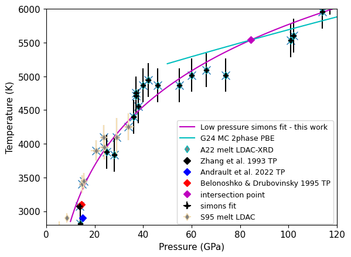
plt.plot(eosdat_list[G14mc['id']].P,eosdat_list[G14mc['id']].T,color="black")#,label='Low-P Phases')
ind = np.where( (eosdat_list[G14mc['id']].P>4.25) & (eosdat_list[G14mc['id']].P < 14))[0]
if 1:
# fit lab data for STV steep slope melt curve
fitx = eosdat_list[G14mc['id']].P[ind]
fitf = eosdat_list[G14mc['id']].T[ind]
fitx_std = np.zeros(len(fitx))+1
fitf_std = np.zeros(len(fitx))+10
fitrefid = np.full(len(fitx), -99, dtype=int)
fitreflist=[]
for i in np.unique(fitrefid):
fitreflist.append(str(i)+': misc')
# initialize the HPeos_Fit class
sio2_mc_staticlow = hp.HPeos_Fit()
sio2_mc_staticlow.formula = 'SiO2'
sio2_mc_staticlow.x = fitx
sio2_mc_staticlow.f = fitf
sio2_mc_staticlow.x_std = fitx_std
sio2_mc_staticlow.f_std = fitf_std
sio2_mc_staticlow.refid = fitrefid
sio2_mc_staticlow.reflist = fitreflist
sio2_mc_staticlow.x_var = 'P'
sio2_mc_staticlow.f_var = 'T'
sio2_mc_staticlow.x_units = 'GPa'
sio2_mc_staticlow.f_units = 'K'
sio2_mc_staticlow.x_desc = 'Pressure'
sio2_mc_staticlow.f_desc = 'Temperature'
sio2_mc_staticlow.phase_fit = 'melt curve'
DateTime_in_ISOFormat = datetime.datetime.now(zoneinfo.ZoneInfo('UTC')).isoformat('T', 'seconds') #
sio2_mc_staticlow.actions = [['Sarah T. Stewart','create',DateTime_in_ISOFormat,'new fit']]
sio2_mc_staticlow.curvetype = 'cubic'
sio2_mc_staticlow.outputfitpath = outputfitpath # in load_paths.py
sio2_mc_staticlow.filename = 'SiO2_fitcoesitestatic_simons'
sio2_mc_staticlow.a0 = np.asarray([3000,300,.2])
sio2_mc_staticlow.fit()
print('FIT EOS a = ',sio2_mc_staticlow.a)
print('FIT EOS cov = ',sio2_mc_staticlow.cov)
sio2_mc_staticlow.savejson()
sio2_mc_staticlow.savereadable()
print('rms = ',sio2_mc_staticlow.rms)
plt.errorbar(fitx,fitf,fmt='kP',label='simons fit')
sio2_mc_cst = deepcopy(sio2_mc_staticlow)
# '''Simons function f(x) = a[0] + a[1]*x^a[2]'''
ppp = np.arange(.5,15,.1)
ttt = sio2_mc_staticlow.calcf(ppp)
plt.plot(ppp,ttt,'m-',label='Lowest pressure simons fit - this work')
#plt.plot(gm24mc.P,gm24mc.T,'-',color='c',label='G24 MC 2phase PBE')
ppp0 = ppp
ttt0 = ttt
pppcst = ppp
tttcst = ttt
print(pppcst,tttcst)
FIT EOS a = [ 2.05755654e+03 2.09542087e+02 -1.76612995e+01 5.10819740e-01]
FIT EOS cov = [[ 3.27393877e+04 -1.02785976e+04 1.03718220e+03 -3.38641166e+01]
[-1.02785976e+04 3.28496871e+03 -3.36191343e+02 1.11043530e+01]
[ 1.03718220e+03 -3.36191343e+02 3.48108358e+01 -1.16122731e+00]
[-3.38641166e+01 1.11043530e+01 -1.16122731e+00 3.90719834e-02]]
Saved EOS fit in SiO2_fitcoesitestatic_simons.txt
Saved EOS fit in readable file SiO2_fitcoesitestatic_simons-readable.txt
rms = 3.1405836066652757
[ 0.5 0.6 0.7 0.8 0.9 1. 1.1 1.2 1.3 1.4 1.5 1.6 1.7 1.8
1.9 2. 2.1 2.2 2.3 2.4 2.5 2.6 2.7 2.8 2.9 3. 3.1 3.2
3.3 3.4 3.5 3.6 3.7 3.8 3.9 4. 4.1 4.2 4.3 4.4 4.5 4.6
4.7 4.8 4.9 5. 5.1 5.2 5.3 5.4 5.5 5.6 5.7 5.8 5.9 6.
6.1 6.2 6.3 6.4 6.5 6.6 6.7 6.8 6.9 7. 7.1 7.2 7.3 7.4
7.5 7.6 7.7 7.8 7.9 8. 8.1 8.2 8.3 8.4 8.5 8.6 8.7 8.8
8.9 9. 9.1 9.2 9.3 9.4 9.5 9.6 9.7 9.8 9.9 10. 10.1 10.2
10.3 10.4 10.5 10.6 10.7 10.8 10.9 11. 11.1 11.2 11.3 11.4 11.5 11.6
11.7 11.8 11.9 12. 12.1 12.2 12.3 12.4 12.5 12.6 12.7 12.8 12.9 13.
13.1 13.2 13.3 13.4 13.5 13.6 13.7 13.8 13.9 14. 14.1 14.2 14.3 14.4
14.5 14.6 14.7 14.8 14.9] [2157.97611161 2177.03406193 2195.75717577 2214.14851805 2232.21115369
2249.9481476 2267.3625647 2284.45746992 2301.23592817 2317.70100436
2333.85576342 2349.70327027 2365.24658982 2380.488787 2395.43292671
2410.08207389 2424.43929344 2438.50765029 2452.29020936 2465.79003555
2479.0101938 2491.95374902 2504.62376613 2517.02331004 2529.15544568
2541.02323797 2552.62975181 2563.97805214 2575.07120387 2585.91227191
2596.50432119 2606.85041662 2616.95362313 2626.81700563 2636.44362904
2645.83655827 2654.99885826 2663.93359391 2672.64383014 2681.13263187
2689.40306403 2697.45819152 2705.30107927 2712.9347922 2720.36239522
2727.58695325 2734.61153122 2741.43919403 2748.07300662 2754.51603388
2760.77134076 2766.84199216 2772.73105299 2778.44158819 2783.97666267
2789.33934135 2794.53268914 2799.55977096 2804.42365174 2809.12739638
2813.67406982 2818.06673697 2822.30846274 2826.40231205 2830.35134983
2834.15864099 2837.82725045 2841.36024313 2844.76068394 2848.03163781
2851.17616966 2854.1973444 2857.09822694 2859.88188222 2862.55137514
2865.10977063 2867.5601336 2869.90552898 2872.14902168 2874.29367662
2876.34255871 2878.29873288 2880.16526405 2881.94521713 2883.64165704
2885.25764871 2886.79625704 2888.26054696 2889.65358338 2890.97843123
2892.23815542 2893.43582087 2894.57449251 2895.65723523 2896.68711398
2897.66719366 2898.60053919 2899.4902155 2900.3392875 2901.1508201
2901.92787823 2902.67352681 2903.39083075 2904.08285497 2904.75266439
2905.40332393 2906.03789851 2906.65945305 2907.27105246 2907.87576166
2908.47664558 2909.07676912 2909.67919721 2910.28699477 2910.90322672
2911.53095796 2912.17325343 2912.83317804 2913.51379671 2914.21817436
2914.9493759 2915.71046626 2916.50451035 2917.33457309 2918.2037194
2919.1150142 2920.0715224 2921.07630893 2922.1324387 2923.24297664
2924.41098765 2925.63953666 2926.93168859 2928.29050836 2929.71906088
2931.22041107 2932.79762385 2934.45376415 2936.19189687 2938.01508693
2939.92639926 2941.92889878 2944.02565039 2946.21971903 2948.5141696 ]
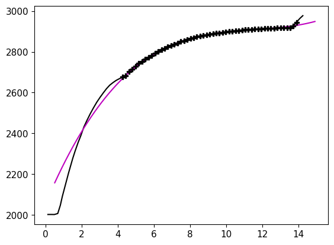
plt.plot(eosdat_list[G14mc['id']].P,eosdat_list[G14mc['id']].T,color="black")#,label='Low-P Phases')
ind = np.where( (eosdat_list[G14mc['id']].P>.75) & (eosdat_list[G14mc['id']].P < 4.25))[0]
if 1:
# fit lab data for STV steep slope melt curve
fitx = eosdat_list[G14mc['id']].P[ind]
fitf = eosdat_list[G14mc['id']].T[ind]
fitx_std = np.zeros(len(fitx))+1
fitf_std = np.zeros(len(fitx))+10
fitrefid = np.full(len(fitx), -99, dtype=int)
fitreflist=[]
for i in np.unique(fitrefid):
fitreflist.append(str(i)+': misc')
# initialize the HPeos_Fit class
sio2_mc_staticqtz = hp.HPeos_Fit()
sio2_mc_staticqtz.formula = 'SiO2'
sio2_mc_staticqtz.x = fitx
sio2_mc_staticqtz.f = fitf
sio2_mc_staticqtz.x_std = fitx_std
sio2_mc_staticqtz.f_std = fitf_std
sio2_mc_staticqtz.refid = fitrefid
sio2_mc_staticqtz.reflist = fitreflist
sio2_mc_staticqtz.x_var = 'P'
sio2_mc_staticqtz.f_var = 'T'
sio2_mc_staticqtz.x_units = 'GPa'
sio2_mc_staticqtz.f_units = 'K'
sio2_mc_staticqtz.x_desc = 'Pressure'
sio2_mc_staticqtz.f_desc = 'Temperature'
sio2_mc_staticqtz.phase_fit = 'melt curve'
DateTime_in_ISOFormat = datetime.datetime.now(zoneinfo.ZoneInfo('UTC')).isoformat('T', 'seconds') #
sio2_mc_staticqtz.actions = [['Sarah T. Stewart','create',DateTime_in_ISOFormat,'new fit']]
sio2_mc_staticqtz.curvetype = 'cubic'
sio2_mc_staticqtz.outputfitpath = outputfitpath # in load_paths.py
sio2_mc_staticqtz.filename = 'SiO2_fithighqtzstatic_simons'
sio2_mc_staticqtz.a0 = np.asarray([3000,300,.2])
sio2_mc_staticqtz.fit()
print('FIT EOS a = ',sio2_mc_staticqtz.a)
print('FIT EOS cov = ',sio2_mc_staticqtz.cov)
sio2_mc_staticqtz.savejson()
sio2_mc_staticqtz.savereadable()
print('rms = ',sio2_mc_staticqtz.rms)
plt.plot(fitx,fitf,'r.',label='fit dat')
# '''Simons function f(x) = a[0] + a[1]*x^a[2]'''
ppp = np.arange(.5,7,.1)
ttt = sio2_mc_staticqtz.calcf(ppp)
plt.plot(ppp,ttt,'r-',label='Lowest pressure simons fit - this work')
tmp = np.where(ttt <= 2000)[0]
pppa=ppp
ttta=ttt
print('P at 1999K =',np.interp(1999,ttt,ppp), ' start of beta-qtz')
ppp = np.arange(4,15,.1)
ttt = sio2_mc_cst.calcf(ppp)
pppb=ppp
tttb=ttt
plt.plot(ppp,ttt,'m-',label='Lowest pressure simons fit - this work')
#plt.plot(gm24mc.P,gm24mc.T,'-',color='c',label='G24 MC 2phase PBE')
#ppp0 = ppp
#ttt0 = ttt
plt.ylim(1900,3500)
plt.xlim(0,25)
ppp = np.arange(10,120,1)
ttt = sio2_mc_stv.calcf(ppp)
plt.plot(ppp,ttt,'m--',label='fit stv')
pppc=ppp
tttc=ttt
#print(ppp,ttt)
if 1:
x1,y1=intersection(pppa,ttta,pppb,tttb)
p1=x1[0]
t1=y1[0]
print('Intersection (P,T) = ',p1,t1)
plt.plot(p1,t1,'mD',label='intersection point')
if 1:
x1,y1=intersection(pppb,tttb,pppc,tttc)
p1=x1[0]
t1=y1[0]
print('Intersection (P,T) = ',p1,t1)
plt.plot(p1,t1,'mD',label='intersection point')
if 1:
# DAC melt curve points
# stv melt curve Shen and Lazer 1995
plt.errorbar(eosdat_list[S95mcstv['id']].P,eosdat_list[S95mcstv['id']].T,\
xerr=eosdat_list[S95mcstv['id']].P_std,yerr=eosdat_list[S95mcstv['id']].T_std,\
fmt='d',color='wheat',mfc='grey',label=S95mcstv['lab'])
# Andrault et al. 2022 revised
plt.plot(eosdat_list[A22mc['id']].P,eosdat_list[A22mc['id']].T,'cd',mfc='grey',label=A22mc['lab'])
plt.plot(13.7,2800+273,'kD',label='Zhang et al. 1993 TP')
plt.plot(15,2900,'bD',label='Andrault et al. 2022 TP')
plt.plot(14.5,3100,'rD',label='Belonoshko & Drubovinsky 1995 TP')
FIT EOS a = [1703.66802549 487.37302608 -76.01077651 3.56206079]
FIT EOS cov = [[ 516428.61507175 -652008.07154507 246903.3314545 -29081.86178622]
[-652008.07154507 858624.60792641 -333588.9671105 39984.73513284]
[ 246903.3314545 -333588.9671105 131972.41335734 -16033.92268599]
[ -29081.86178622 39984.73513284 -16033.92268599 1968.77319356]]
Saved EOS fit in SiO2_fithighqtzstatic_simons.txt
Saved EOS fit in readable file SiO2_fithighqtzstatic_simons-readable.txt
rms = 1.6690320860236114
P at 1999K = 0.6750544941883053 start of beta-qtz
Intersection (P,T) = 4.379478229766827 2679.3905794856205
Intersection (P,T) = 10.477442676513515 2901.7525947133745
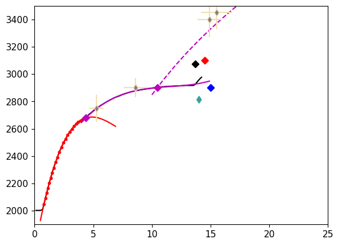
Full melt curve#
# CHECK WHERE THIS IS USED
# 1.6605391 # amu/a^3 -> g/cm3
rrr=4.287 # g/cm3
mp = 1.67262192595e-24 # g
mpsio2 = 28.085+15.999*2 # g
print(2.*mpsio2/46.611*1.6605391)
print(7.3901/46.61)
print(4.2025/46.61)
print(1.4176/46.61)
print(stvpvt.rhoref)
4.280971047405119
0.15855181291568335
0.09016305513838231
0.03041407423299721
4.234480121748616
plt.plot(stsmcsmooth.P,stsmcsmooth.T,'m-',linewidth=3,label='Fiducial Melt Curve')
plt.errorbar(eosdat_list[G16mc['id']].P[5:8],eosdat_list[G16mc['id']].T[5:8],fmt='s--',mfc='white',yerr=eosdat_list[G16mc['id']].T_std[5:8],label=G16mcb['lab']) # cotunnite structure
plt.errorbar(eosdat_list[G16mc['id']].P[8:11],eosdat_list[G16mc['id']].T[8:11],fmt='o--',mfc='white',yerr=eosdat_list[G16mc['id']].T_std[8:11],label=G16mcc['lab']) # Fe2P structure
plt.plot([p1,p2],[t1,t2],'kP',label='intersection points')
plt.xlabel('Pressure (GPa)')
plt.ylabel('Temperature (K)')
plt.legend()
plt.show()
plt.plot(stsmcsmooth.P,stsmcsmooth.T,'m-',linewidth=3,label='Fiducial Melt Curve')
plt.errorbar(eosdat_list[G16mc['id']].P[5:8],eosdat_list[G16mc['id']].T[5:8],fmt='s--',mfc='white',yerr=eosdat_list[G16mc['id']].T_std[5:8],label=G16mcb['lab']) # cotunnite structure
plt.errorbar(eosdat_list[G16mc['id']].P[8:11],eosdat_list[G16mc['id']].T[8:11],fmt='o--',mfc='white',yerr=eosdat_list[G16mc['id']].T_std[8:11],label=G16mcc['lab']) # Fe2P structure
plt.plot([p1,p2],[t1,t2],'kP',label='intersection points')
# Luo et al. MD model
# single phase stishovite melting calculation
#plt.plot([20,40,60,80,120],[3625,4500,5500,6000,7000],'kD')
plt.xlabel('Pressure (GPa)')
plt.ylabel('Temperature (K)')
plt.xlim(0,600)
plt.ylim(0,10000)
plt.legend()
plt.show()
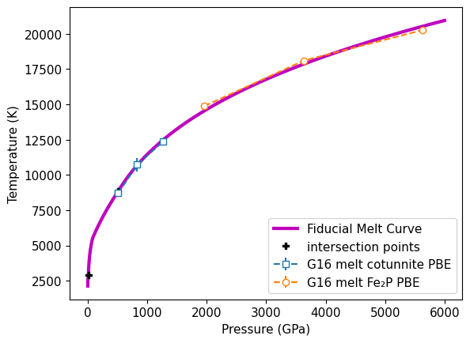
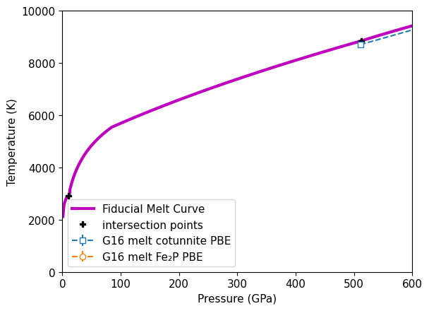
plt.plot(stsmcsmooth.P,stsmcsmooth.T,'m-',linewidth=3,label='Fiducial Melt Curve')
plt.errorbar(eosdat_list[G16mc['id']].P[5:8],eosdat_list[G16mc['id']].T[5:8],fmt='s--',mfc='white',yerr=eosdat_list[G16mc['id']].T_std[5:8],label=G16mcb['lab']) # cotunnite structure
plt.errorbar(eosdat_list[G16mc['id']].P[8:11],eosdat_list[G16mc['id']].T[8:11],fmt='o--',mfc='white',yerr=eosdat_list[G16mc['id']].T_std[8:11],label=G16mcc['lab']) # Fe2P structure
plt.plot([p1,p2],[t1,t2],'kP',label='intersection points')
plt.xlabel('Pressure (GPa)')
plt.ylabel('Temperature (K)')
plt.xlim(200,2500)
plt.ylim(7000,20000)
plt.legend()
plt.show()
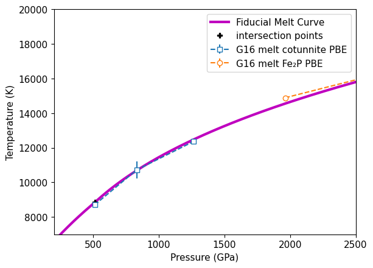
Density on Melt Curve - Liquidus#
plt.plot(eosdat_list[G24mclrho['id']].rho_liquid+pbe_liquid_density_shift,eosdat_list[G24mclrho['id']].P_liquid,'x--',color='red',label=G24mclrho['lab']+'\n(2phase, shift)')
plt.plot(eosdat_list[G16mc['id']].rho_l+pbe_liquid_density_shift,eosdat_list[G16mc['id']].P,'s--',color='m',label='G16 liquidus shift') # cotunnite structure
xxx = np.concatenate((eosdat_list[G24mclrho['id']].rho_liquid+pbe_liquid_density_shift,eosdat_list[G16mc['id']].rho_l+pbe_liquid_density_shift))
yyy = np.concatenate((eosdat_list[G24mclrho['id']].P_liquid,eosdat_list[G16mc['id']].P))
rrr = np.concatenate((np.zeros(len(eosdat_list[G24mclrho['id']].P_liquid)),np.zeros(len(eosdat_list[G16mc['id']].P))+1))
res = np.polyfit(xxx,yyy,2)
rrr_list = [eosdat_list[G24mclrho['id']].reflist[1][0],eosdat_list[G16mc['id']].reflist[1][0]]
# initialize the HPeos_Fit class
rho_l_fit = hp.HPeos_Fit()
rho_l_fit.material = 'SiO2 liquid'
rho_l_fit.formula = 'SiO2'
rho_l_fit.x = xxx
rho_l_fit.f = yyy
rho_l_fit.x_std = np.zeros(len(xxx))
rho_l_fit.f_std = np.zeros(len(yyy))
rho_l_fit.refid = rrr
rho_l_fit.reflist = rrr_list
rho_l_fit.x_var = 'rho'
rho_l_fit.f_var = 'P'
rho_l_fit.x_units = 'g/cm3'
rho_l_fit.f_units = 'GPa'
rho_l_fit.x_desc = 'Density'
rho_l_fit.f_desc = 'Pressure'
rho_l_fit.phase_fit = 'liquid'
rho_l_fit.remlist.append('Fit to PBE DFT liquidus calculations.')
DateTime_in_ISOFormat = datetime.datetime.now(zoneinfo.ZoneInfo('UTC')).isoformat('T', 'seconds') #
rho_l_fit.actions = [['Sarah T. Stewart','create',DateTime_in_ISOFormat,'new fit']]
rho_l_fit.curvetype = 'quadratic'
rho_l_fit.outputfitpath = outputfitpath # in load_paths.py
rho_l_fit.filename = 'rho_l_fit_quadratic'
rho_l_fit.fit()
print('FIT EOS a = ',rho_l_fit.a)
print('FIT EOS cov = ',rho_l_fit.cov)
rho_l_fit.savejson()
rho_l_fit.savereadable()
print('rms = ',rho_l_fit.rms)
mc_new = hp.HPeos_MeltCurve()
mc_new.rho_l = np.arange(3.5,18,.01)
mc_new.P_l = rho_l_fit.a[0]+rho_l_fit.a[1]*mc_new.rho_l+rho_l_fit.a[2]*mc_new.rho_l*mc_new.rho_l
plt.plot(mc_new.rho_l,mc_new.P_l,'k--',label='Quadratic fit')
plt.title('PBE liquid density on the melt curve (shifted to exp)')
plt.legend()
plt.xlabel('Density (g/cm³)')
plt.ylabel('Pressure (GPa)')
plt.show()
plt.plot(eosdat_list[G24mclrho['id']].rho_liquid+pbe_liquid_density_shift,eosdat_list[G24mclrho['id']].P_liquid,'x--',color='red',label=G24mclrho['lab']+'\n(2phase, shift)')
plt.plot(eosdat_list[G16mc['id']].rho_l+pbe_liquid_density_shift,eosdat_list[G16mc['id']].P,'s--',color='m',label='G16 liquidus shift') # cotunnite structure
plt.plot(mc_new.rho_l,mc_new.P_l,'k--',label='Quadratic fit')
plt.plot(stsmcsmooth.rho,stsmcsmooth.P,'m-')
plt.title('PBE liquid density on the melt curve (shifted to exp)')
plt.xlim(3.5,9)
plt.ylim(0,1000)
plt.legend()
plt.xlabel('Density (g/cm³)')
plt.ylabel('Pressure (GPa)')
plt.show()
FIT EOS a = [ 288.47170779 -172.4174306 27.69796636]
FIT EOS cov = [[0. 0. 0.]
[0. 0. 0.]
[0. 0. 0.]]
Saved EOS fit in rho_l_fit_quadratic.txt
Saved EOS fit in readable file rho_l_fit_quadratic-readable.txt
rms = 13.536838173636651
/opt/hostedtoolcache/Python/3.13.16/x64/lib/python3.13/site-packages/scipy/odr/_odrpack.py:394: RuntimeWarning: divide by zero encountered in divide
return 1./np.power(sd, 2)
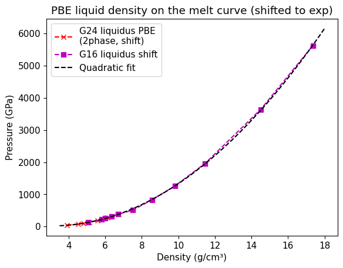
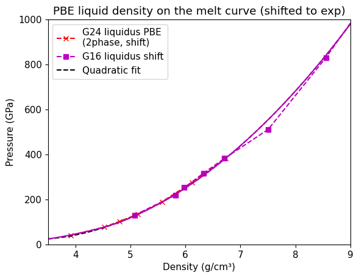
Density on Melt Curve - Solidus#
The density difference is limited to 2% at high pressures and the dS is set to sqrt(2)R
plt.plot(stsmcsmooth.rho,stsmcsmooth.P,'m-',label='Fiducial liquidus')
ind = np.where(stsmcsmooth.rho<50)
plt.fill_betweenx(stsmcsmooth.P[ind],stsmcsmooth.rho_low[ind],stsmcsmooth.rho_high[ind],color='m',alpha=0.2,label='Fiducial liquidus density error envelope')
plt.plot(stsmcsmooth.rho_s,stsmcsmooth.P,'-',color=colsolidus,label='Fiducial solidus')
ind = np.where(stsmcsmooth.rho<50)
plt.fill_betweenx(stsmcsmooth.P[ind],stsmcsmooth.rho_s[ind]-(stsmcsmooth.rho_s_high[ind]-stsmcsmooth.rho_s[ind]),stsmcsmooth.rho_s_high[ind],color=colsolidus,alpha=0.2,label='Fiducial solidus density error envelope')
plt.legend(fontsize=lfss,title='Model Density Uncertainties\nfrom Temperature 1σ')
plt.ylim(0,250)
plt.xlim(3.,6.)
plt.xlabel('Density (g/cm³)')
plt.ylabel('Pressure (GPa)')
plt.show()
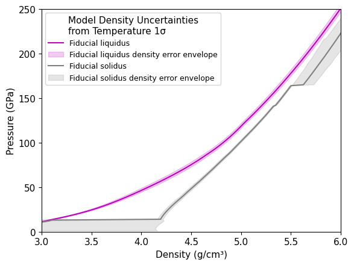
plt.plot(stsmcsmooth.P,(stsmcsmooth.rho-stsmcsmooth.rho_low)/stsmcsmooth.rho,label='liquidus low')
plt.plot(stsmcsmooth.P,(stsmcsmooth.rho_high-stsmcsmooth.rho)/stsmcsmooth.rho,label='liquidus high')
plt.plot(stsmcsmooth.P,(stsmcsmooth.rho_s-stsmcsmooth.rho_s_low)/stsmcsmooth.rho_s,label='solidus low')
plt.plot(stsmcsmooth.P,(stsmcsmooth.rho_s_high-stsmcsmooth.rho_s)/stsmcsmooth.rho_s,label='solidus high')
plt.xlim(0,500)
plt.ylim(0,.015)
plt.legend(fontsize=lfss)
plt.xlabel('Pressure (GPa)')
plt.ylabel('Fractional uncertainty in density')
Text(0, 0.5, 'Fractional uncertainty in density')
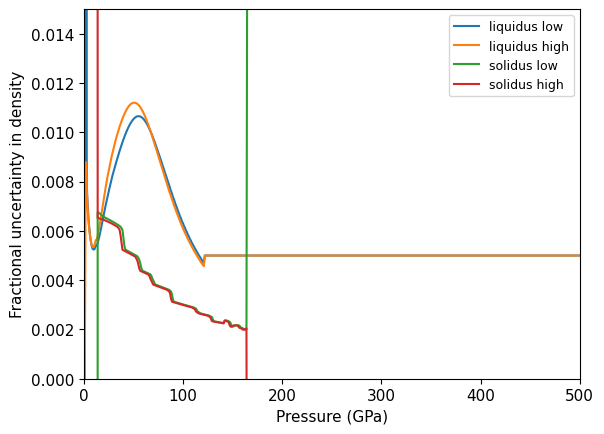
# Geng Mohn calcs
plt.plot(eosdat_list[G24mcl['id']].rho_liquid+pbe_liquid_density_shift,eosdat_list[G24mcl['id']].P_liquid,'+',color='red',label=G24mcl['lab']+ ' shift')
plt.plot(eosdat_list[G24mcs['id']].rho_solid+pbe_liquid_density_shift,eosdat_list[G24mcs['id']].P_solid,'x',color='red',label=G24mcs['lab']+' shift')
plt.plot(mc_new.rho_l,mc_new.P_l,'k--',label='Liquidus PBE quadratic fit')
plt.plot(mc_new.rho_l*1.02,mc_new.P_l,'k--',label='2% shift')
plt.plot(stsmcsmooth.rho,stsmcsmooth.P,'m-',label='Fiducial liquidus')
plt.plot(stsmcsmooth.rho_s,stsmcsmooth.P,'-',color=colsolidus,label='Fiducial solidus')
plt.legend()
plt.ylim(0,550)
plt.xlim(3.5,9)
plt.xlabel('Density (g/cm³)')
plt.ylabel('Pressure (GPa)')
plt.show()
#x,y=intersection(mc_new.rho_l,mc_new.P_l,stsmcsmooth.rho,stsmcsmooth.P)
#print(x,y)
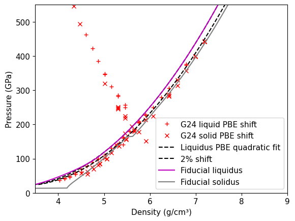
Check the Clausius Clapeyron Relation#
The transition from sft to pyrite is not included and a high pressure value for dS and dV are imposed for now.
The melt curve slope is given by
Andrault et al. [2020] found that the melt curve of stishovite is initially steep and then flattens at about 40 GPa. Upon reaching the CaCl\(_2\)-type phase, the melt curve steepens again. Andrault et al. [2020] suggest that the entropy difference with the high-density melt must be decreasing.
For now, entropy is fixed to a constant on the melt curve near the transition from pyrite to cotunnite structure.
Note that the CN in glass has an abrupt transition but the DFT-PBE calculated CN in liquid is a more graduate transition. So not a sharp LDM to HDM curvature change.
pmax=750 # GPa
plt.plot(stsmcsmooth.P, stsmcsmooth.S_l-stsmcsmooth.S_s,label='Model dS')
plt.plot([0,pmax],[ 3*.7*Rgas/(sio2mol/1000), 3*.7*Rgas/(sio2mol/1000)],'--',label='dS=sqrt(2)R')
plt.xlabel('Pressure (GPa)')
plt.ylabel('dS (J/K/kg)')
plt.title('dS on melt curve')
plt.plot([50,50],[100,600],label='50 GPa')
plt.plot([70,70],[100,600],label='70 GPa')
plt.xlim(10,pmax)
plt.ylim([100,1000])
plt.legend()
plt.show()
print(3*np.log(2)*Rgas/(sio2mol/1000))
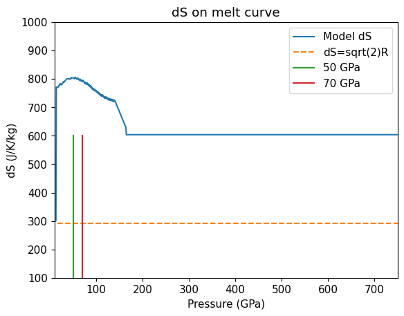
287.74323814600064
pmax=1000 # GPa
plt.plot(stsmcsmooth.P, stsmcsmooth.S_l-stsmcsmooth.S_s,'m-',label='Model dS')
plt.plot([0,pmax],[ 1.414*Rgas/(sio2mol/1000), 1.414*Rgas/(sio2mol/1000)],'--',label='dS=sqrt(2)R')
print(38.7/(sio2mol/1000))
plt.plot([100,120,140,160,180,200],np.asarray([38.7,44.2,44.5,40.6,34,25.9])/(sio2mol/1000),label='P26 sft PBEsol')
plt.plot([140,160,180,200,220,240],np.asarray([36.7,36.5,36.1,35.4,34.3,33.6])/(sio2mol/1000),label='P26 pyr PBEsol')
plt.xlabel('Pressure (GPa)')
plt.ylabel('dS (J/K/kg)')
plt.title('dS on melt curve')
plt.plot([14,14],[0,pmax],':')
plt.plot([Pt3,Pt3],[0,pmax],':',label='Est. CaCl2-sft TP')
plt.plot([165,165],[0,pmax],':',label='P26 sft-pyr TP PBEsol')
#plt.plot([50,50],[100,750])
plt.xlim(0,pmax)
plt.ylim([100,pmax])
plt.legend()
plt.show()
plt.plot(stsmcsmooth.P, (stsmcsmooth.rho-stsmcsmooth.rho_s)/((stsmcsmooth.rho+stsmcsmooth.rho_s)/2))
plt.xlabel('Pressure (GPa)')
plt.ylabel('drho/rho (g/cm3)')
plt.title('drho/rho_mean on melt curve')
plt.plot([30,pmax],[-.03,-.03],label='3% rho change')
plt.plot([30,pmax],[-.02,-.02],label='2% rho change')
#plt.plot([30,pmax],[-.01,-.01],label='1% rho change')
plt.xlim(0,pmax)
plt.ylim(-.3,0)
plt.legend()
plt.show()
plt.plot(stsmcsmooth.P,stsmcsmooth.S_s,label='solidus')
plt.plot(stsmcsmooth.P,stsmcsmooth.S_l,label='liquidus')
plt.xlabel('Pressure (GPa)')
plt.ylabel('S(J/K/kg)')
plt.xlim(0,pmax)
plt.ylim(3000,6000)
plt.legend()
plt.show()
644.1089825741059
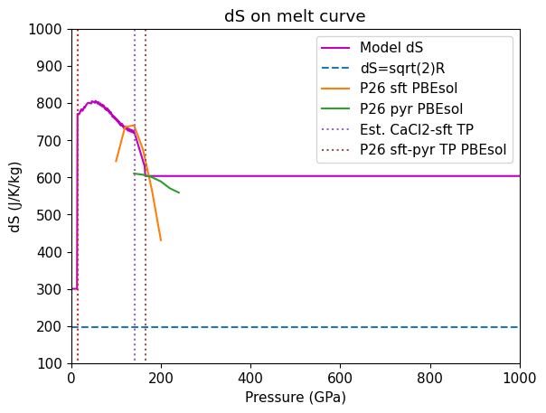
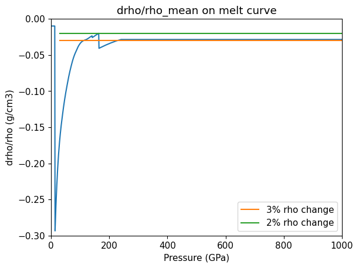
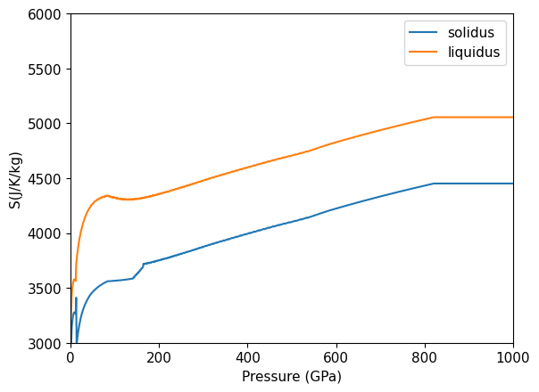
parkp = np.asarray([140,160,180,200,220,240])
parkdv = np.asarray([.319,.276,.243,.215,.191,.172]) * 0.602214 / 20.028
print(parkdv)
[0.00959188 0.00829893 0.00730667 0.00646475 0.0057431 0.0051718 ]
dtdp=np.gradient(stsmcsmooth.T,1.e9) # K/Pa
plt.plot(stsmcsmooth.P,dtdp,label='dT/dP')
dv = ((1/stsmcsmooth.rho)-(1/stsmcsmooth.rho_s))/1000. # m3/kg
ds = stsmcsmooth.S_l-stsmcsmooth.S_s #J/K/kg
plt.plot(stsmcsmooth.P,dv/ds,label='dV/dS')
#plt.plot(stsmcsmooth.P,dv/ds*.8,'--',label='.8*dV/dS')
plt.xlim(0,pmax)
plt.ylim(0,1.e-7)
plt.xlabel('Pressure (GPa)')
plt.ylabel('dT/dP or dV/dS (K/Pa)')
plt.plot([70,70],[0,1.e-7],':',label='70 GPa')
plt.plot([Pt3,Pt3],[0,1.e-7],':',label='Pt3')
plt.plot([165,165],[0,1.e-7],':',label='Pt4')
plt.legend()
plt.show()
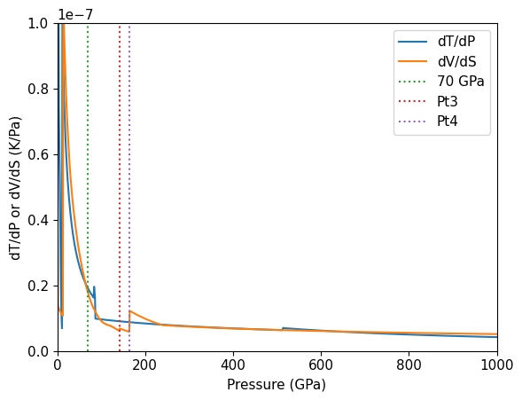
#Deng dV in A3/atom
plt.plot([100,120,140,160,180,200],np.asarray([.303,.227,.172,.126,.088,.058])*0.602214 / 20.028,label='P26 sft PBEsol')
plt.plot([140,160,180,200,220,240],np.asarray([.319,.276,.243,.215,.191,.172])*0.602214 / 20.028,label='P26 pyr PBEsol')
parkdv = (np.asarray([.319,.276,.243,.215,.191,.172]))* 0.602214 / 20.028 # correct
print(parkdv)
print(1/parkdv)
plt.plot([Pt3,Pt3],[0,.1],':',label='Est. CaCl2-sft TP')
plt.plot([167,167],[0,.1],':',label='P26 sft-pyr TP')
dv = ((1/stsmcsmooth.rho)-(1/stsmcsmooth.rho_s))# cm3/g
print(dv)
drho = ((stsmcsmooth.rho_s)-(stsmcsmooth.rho))# g/cm3
print(drho)
#ds = stsmcsmooth.S_l-stsmcsmooth.S_s #J/K/kg
plt.plot(stsmcsmooth.P,dv,'m-',label='Model melt curve dV')
plt.xlim(0,400)
plt.ylim(0,.1)
plt.xlabel('Pressure (GPa)')
plt.ylabel('dV (cm3/g)')
plt.legend()
plt.show()
[0.00959188 0.00829893 0.00730667 0.00646475 0.0057431 0.0051718 ]
[104.25479823 120.4973936 136.86123718 154.68502621 174.12188814
193.35628276]
[0.01049811 0.00411605 0.0039912 ... 0.001583 0.00158289 0.00158278]
[0.00943121 0.02405459 0.02480704 ... 0.51629745 0.51633308 0.51636871]
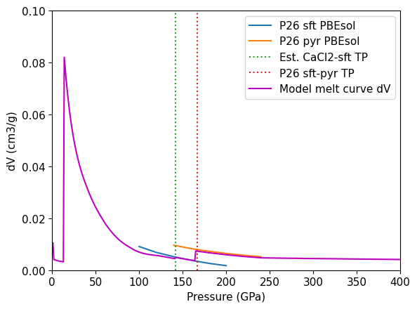
Estimate triple points#
Linear extrapolation of low-pressure boundaries for Stv-CaCl2 and CaCl2 to Sft
# Cst-Stv TP
print('# Cst-Stv TP:')
print('Pt1 = 13.7 # GPa') # using pressure from Zhang et al. 1993
print('Tt1 = ',np.interp(13.7,stsmcsmooth.P,stsmcsmooth.T),' # K') # Zhang et al. 1993 estimated 2800C
print('Compare to define_eos values = ',Pt1,Tt1)
# Cst-Stv TP:
Pt1 = 13.7 # GPa
Tt1 = 3220.7975619137674 # K
Compare to define_eos values = 13.7 3220.7975619137674
# Stv-CaCl2-type second order TP
# This triple point is the intersection of the Tsuchiya et al. GGA
zzz = np.where(eosdat_list[T04pba['id']].T > 1000.)[0]
res = np.polyfit(np.flip(eosdat_list[T04pba['id']].P[zzz]),np.flip(eosdat_list[T04pba['id']].T[zzz]),1)
print('RES a=',res)
print('4000 K pressure = ',np.interp(4000,np.flip(eosdat_list[T04pba['id']].T[zzz]),np.flip(eosdat_list[T04pba['id']].P[zzz])))
print('Pt12 = ',np.interp(4000,np.flip(eosdat_list[T04pba['id']].T[zzz]),np.flip(eosdat_list[T04pba['id']].P[zzz])),' GPa')
print('Compare to define_eos values = ',Pt12)
print('')
parr = np.arange(50,100,1) # pressure
tarr = res[1]+res[0]*parr # temperature
# find intersection with fudicial melt curve
x,y = intersection(parr,tarr,stsmcsmooth.P,stsmcsmooth.T)
print('Triple point')
print(x,y)
print('# Stv-CaCl2 TP:')
print('Pt2 = ',x[0],' # GPa')
print('Tt2 = ',y[0],' # K')
print('Compare to define_eos values = ',Pt2,Tt2)
RES a= [ 168.39552949 -9390.03914284]
4000 K pressure = 62.82706956833862
Pt12 = 62.82706956833862 GPa
Compare to define_eos values = 62.827
Triple point
[88.91220821] [5582.37923764]
# Stv-CaCl2 TP:
Pt2 = 88.91220821388305 # GPa
Tt2 = 5582.379237642232 # K
Compare to define_eos values = 88.91220821388308 5582.379237642232
# CaCl2 to sft TP
zzz = np.where(eosdat_list[T04pbb['id']].T > 1000.)[0]
res = np.polyfit(np.flip(eosdat_list[T04pbb['id']].P[zzz]),np.flip(eosdat_list[T04pbb['id']].T[zzz]),1)
print('RES b=',res)
print('4000 K pressure = ',np.interp(4000,np.flip(eosdat_list[T04pbb['id']].T[zzz]),np.flip(eosdat_list[T04pbb['id']].P[zzz])))
print('Pt23 = ',np.interp(4000,np.flip(eosdat_list[T04pbb['id']].T[zzz]),np.flip(eosdat_list[T04pbb['id']].P[zzz])),' # GPa')
print('Compare to define_eos values = ',Pt23)
print('')
parr = np.arange(50,150,1) # pressure
tarr = res[1]+res[0]*parr # temperature
# find intersection with fudicial melt curve
x,y = intersection(parr,tarr,stsmcsmooth.P,stsmcsmooth.T)
print('Triple point')
print(x,y)
print('# CaCl2-sft TP:')
print('Pt3 = ',x[0],' # GPa')
print('Tt3 = ',y[0],' # K')
print('Compare to define_eos values = ',Pt3,Tt3)
RES b= [ 173.75113152 -18503.2972858 ]
4000 K pressure = 113.4110155408729
Pt23 = 113.4110155408729 # GPa
Compare to define_eos values = 113.4110155408729
Triple point
[141.47365402] [6077.91018034]
# CaCl2-sft TP:
Pt3 = 141.4736540177754 # GPa
Tt3 = 6077.910180343333 # K
Compare to define_eos values = 141.47365401777512 6077.910180343331
# Low density melt to high density melt approx 40 GPa from Andrault et al. 2022
# Second order liquid transition around 40 GPa from Andrault et al. 2022
print('# LDM-HDM Transition:')
print('Ptm = 40 # GPa')
print('Ttm = ',np.interp(40,stsmcsmooth.P,stsmcsmooth.T),' # K')
print('Compare to define_eos values = ',Ptm,Ttm)
# Second order liquid transition around 40 GPa from Andrault et al. 2022
print('# LDM-HDM Transition:')
print('Ptm = 50 # GPa')
print('Ttm = ',np.interp(50,stsmcsmooth.P,stsmcsmooth.T),' # K')
print('Compare to define_eos values = ',Ptm,Ttm)
# LDM-HDM Transition:
Ptm = 40 # GPa
Ttm = 4552.0558269548055 # K
Compare to define_eos values = 50 4841.313561513845
# LDM-HDM Transition:
Ptm = 50 # GPa
Ttm = 4841.313561513845 # K
Compare to define_eos values = 50 4841.313561513845
Hugoniot crossing the melt curve#
# FS enters liquid field
x,y = intersection(fs_hug_liq.P,fs_hug_liq.T,stsmcsmooth.P,stsmcsmooth.T)
print(x,y)
print('fs_startliq_P = ',x[0],' # GPa')
print('Compare to define_eos values = ',fs_startliq_P)
[90.51739] [5598.12759231]
fs_startliq_P = 90.51739000382202 # GPa
---------------------------------------------------------------------------
NameError Traceback (most recent call last)
Cell In[24], line 7
3 print(x,y)
4
5 print('fs_startliq_P = ',x[0],' # GPa')
6
----> 7 print('Compare to define_eos values = ',fs_startliq_P)
NameError: name 'fs_startliq_P' is not defined
# FS crosses solidus
x,y = intersection(fs_hug_stv.rho,fs_hug_stv.P,stsmcsmooth.rho_s,stsmcsmooth.P)
print(x,y)
print('fs_startsol_P = ',y[1],' # GPa')
print('Compare to define_eos values = ',fs_startsol_P)
[4.292826 4.73330942] [27.64421059 72.32639754]
fs_startsol_P = 72.3263975407623 # GPa
Compare to define_eos values = 72.32862722602232
# qtz enters liquid field
x,y = intersection(qtz_hug_liq.P,qtz_hug_liq.T,stsmcsmooth.P,stsmcsmooth.T)
print(x,y)
print('qtz_startliq_P = ',x[0],' # GPa')
print('Compare to define_eos values = ',qtz_startliq_P)
[145.80938585] [6117.08010474]
qtz_startliq_P = 145.80938585293262 # GPa
Compare to define_eos values = 145.80682496155464
# Qtz sold region crosses solidus
x,y = intersection(qtz_hug_solid.rho,qtz_hug_solid.P,stsmcsmooth.rho_s,stsmcsmooth.P)
print(x,y)
print('qtz_startsol_P = ',y[0],' # GPa')
print('Compare to define_eos values = ',qtz_startsol_P)
[4.99116474] [100.50773756]
qtz_startsol_P = 100.50773755669458 # GPa
Compare to define_eos values = 100.50773755669458
# Qtz stv crosses stv-CaCl2 boundary
zzz = np.where(eosdat_list[T04pba['id']].T > 1000.)[0]
res = np.polyfit(np.flip(eosdat_list[T04pba['id']].P[zzz]),np.flip(eosdat_list[T04pba['id']].T[zzz]),1)
parr = np.arange(50,100,1) # pressure
tarr = res[1]+res[0]*parr # temperature
# find intersection with fudicial melt curve
x,y = intersection(qtz_hug_stv.P,qtz_hug_stv.T,parr,tarr)
print('qtz_trans_cacl2_P = ',x[0],' # GPa')
print('Compare to define_eos values = ',qtz_trans_cacl2_P)
qtz_trans_cacl2_P = 82.58142670722148 # GPa
Compare to define_eos values = 82.58142670722148
# cst enters liquid field
x,y = intersection(cst_hug_liq.P,cst_hug_liq.T,stsmcsmooth.P,stsmcsmooth.T)
print(x,y)
print('cst_liquidus_P = ',x[0],' # GPa')
print('Compare to define_eos values = ',cst_liquidus_P)
[183.61347134] [6449.00922951]
cst_liquidus_P = 183.61347134392335 # GPa
Compare to define_eos values = 183.61347134392335
# Cst cacl2 region crosses solidus
x,y = intersection(cst_hug_cacl2.rho,cst_hug_cacl2.P,stsmcsmooth.rho_s,stsmcsmooth.P)
print(x,y)
print('cst_solidus_P = ',y[0],' # GPa')
print('Compare to define_eos values = ',cst_solidus_P)
[5.20487876] [125.53423056]
cst_solidus_P = 125.53423056253213 # GPa
Compare to define_eos values = 125.53423196515627
# stv enters liquid field in PT space
x,y = intersection(stv_hug_liq.P,stv_hug_liq.T,stsmcsmooth.P,stsmcsmooth.T)
print(x,y)
print('stv_liquidus_P = ',x[0],' # GPa')
print('Compare to define_eos values = ',stv_liquidus_P)
[632.94294278] [9622.88901809]
stv_liquidus_P = 632.9429427843702 # GPa
Compare to define_eos values = 632.9429427843702
# stv crosses the fitted solidus density -- this is not correct in PVT relationships
x,y = intersection(stv_hug_liq.rho,stv_hug_liq.P,stsmcsmooth.rho_s,stsmcsmooth.P)
print(x,y)
print('stv_solidus_P = ',y[0],' # GPa')
print('Compare to define_eos values = ',stv_solidus_P)
[7.7255964] [555.26628334]
stv_solidus_P = 555.2662833351458 # GPa
Compare to define_eos values = 490.63813073715124
# stv enters liquid field in PT space
plt.plot(stv_hug_liq.P,stv_hug_liq.T,'k-',label='New Stv Hugoniot')
plt.plot(stsmcsmooth.P,stsmcsmooth.T,'m-',label='Fiducial melt curve')
plt.errorbar(eosdat_list[G16mc['id']].P[5:8],eosdat_list[G16mc['id']].T[5:8],fmt='s--',mfc='white',yerr=eosdat_list[G16mc['id']].T_std[5:8],label=G16mcb['lab']) # cotunnite structure
plt.ylabel('Temperature (K)')
plt.xlabel('Pressure (GPa)')
x,y = intersection(stv_hug_liq.P,stv_hug_liq.T,stsmcsmooth.P,stsmcsmooth.T)
print(x,y)
plt.plot(x,y,'kD')
xl=np.copy(x)
print('stv_liquidus_P = ',x[0],' # GPa')
print('Compare to define_eos values = ',stv_liquidus_P)
plt.legend(fontsize=lfss)
plt.xlim(0,1500)
plt.ylim(5000,25000)
[632.94294278] [9622.88901809]
stv_liquidus_P = 632.9429427843702 # GPa
Compare to define_eos values = 632.9429427843702
(5000.0, 25000.0)
# estimate stv solidus using density information from G16
# assume this increase in density
# the PVT for melt cuve intersection with stv Hugoniot is more self-consistent with cotunnite points that are denser than the fiducial solidus
scale=1.02
shift=pbe_liquid_density_shift # PBE density correction from dft-offset.ipynb
plt.plot(stv_hug_liq.rho,stv_hug_liq.P,'-',color='firebrick',linewidth=2,label='New Stv Hugoniot')
# additional pyrite density points not helpful here
#plt.plot((eosdat_list[G16mcpyr['id']].rho_l+shift),eosdat_list[G16mcpyr['id']].P,'o',markersize=10,label=G16mcpyr['lab']) # cotunnite structure
# Gonzales et al. 2016 very high rpessure melt curve points
plt.plot(eosdat_list[G16mcpyr['id']].rho_l+shift,eosdat_list[G16mcpyr['id']].P,'d--',color='orange',label=G16mc['lab']+' shifted') # pyrite structure
plt.plot(eosdat_list[G16mc['id']].rho_l[5:8]+shift,eosdat_list[G16mc['id']].P[5:8],'s--',color='blue',label=G16mcb['lab']+' shifted') # cotunnite structure
plt.plot((eosdat_list[G16mc['id']].rho_l[5:8]+shift)*scale,eosdat_list[G16mc['id']].P[5:8],'s--',color='grey',label='Est. cotunnite solidus') # cotunnite structure
#plt.errorbar(eosdat_list[G16mc['id']].rho_l[1:8]+shift,eosdat_list[G16mc['id']].P[1:8],fmt='s--',mfc='white',mec='m',color='m',label='G16 liquidus shift') # cotunnite structure
#plt.plot((eosdat_list[G16mc['id']].rho_l[1:8]+shift)*scale,eosdat_list[G16mc['id']].P[1:8],'--',color=colsolidus,label='Estimated solidus') # cotunnite structure
#plt.errorbar(eosdat_list[G16mc['id']].rho_l[8:11],eosdat_list[G16mc['id']].P[8:11],fmt='o--',mfc='white',yerr=eosdat_list[G16mc['id']].T_std[8:11],label=G16mcc['lab']) # Fe2P structure
#plt.errorbar(eosdat_list[G16mc['id']].P[::],eosdat_list[G16mc['id']].T[::],fmt='kx',yerr=eosdat_list[G16mc['id']].T_std[::],label=G16mcb['lab']+'all pts')
plt.plot(stsmcsmooth.rho,stsmcsmooth.P,'m-',label='Fiducial liquidus')
plt.plot(stsmcsmooth.rho_s,stsmcsmooth.P,'-',color=colsolidus,label='Fiducial solidus')
plt.ylim(200,1400)
plt.xlim(5.5,10)
plt.xlabel('Density (g/cm3)')
plt.ylabel('Pressure (GPa)')
#plt.plot((eosdat_list[G24mclrho['id']].rho_liquid+shift),eosdat_list[G24mclrho['id']].P_liquid,'kd--',label=G24mclrho['lab']+'\n(2phase, shift)') # cotunnite structure
# stv region crosses solidus
xxx = (eosdat_list[G16mc['id']].rho_l[1:8]+shift)*scale
yyy = eosdat_list[G16mc['id']].P[1:8]
x,y = intersection(stv_hug_liq.rho,stv_hug_liq.P,xxx,yyy)
print(x,y)
plt.plot([5,15],[xl,xl],'m:',label='Liquidus crossing from P-T')
plt.plot(x,y,'kD',label='Solidus crossing')
print('stv_solidus_P = ',y[0],' # GPa')
print('Compare to define_eos values = ',stv_solidus_P)
plt.legend(fontsize=lfss)
print('Hugoniot crosses melt curve near the pyrite-cottunite-liquid triple point from G16')
[7.52608446] [490.63813074]
stv_solidus_P = 490.63813073715124 # GPa
Compare to define_eos values = 490.63813073715124
Hugoniot crosses melt curve near the pyrite-cottunite-liquid triple point from G16
D26mc = np.loadtxt(silicadatadir+'deng2026_tableS1.csv',delimiter=',', skiprows=1,usecols=(1, 2, 4,9,10,11))
D26mcphase = np.loadtxt(silicadatadir+'deng2026_tableS1.csv',delimiter=',', skiprows=1,usecols=(0),dtype=str)
print(D26mcphase)
print(D26mc)
#parkp = np.asarray([140,160,180,200,220,240])
dengdv = D26mc[:,2]* 0.602214 / 20.028
print(dengdv)
print((D26mc[:,3]-dengdv)/dengdv)
['Stishovite' 'Stishovite' 'Stishovite' 'Stishovite' 'Stishovite'
'Stishovite' 'Stishovite' 'Post-stishovite' 'Post-stishovite'
'Post-stishovite' 'Post-stishovite' 'Post-stishovite' 'Seifertite'
'Seifertite' 'Seifertite' 'Seifertite' 'Seifertite' 'Seifertite'
'Seifertite' 'Seifertite']
[[2.0000e+01 3.9400e+03 1.5700e+00 4.7210e-02 6.0610e+02 8.5395e+06]
[4.0000e+01 4.8400e+03 8.3000e-01 2.4960e-02 8.2200e+02 1.0596e+07]
[6.0000e+01 5.3700e+03 5.4000e-01 1.6240e-02 8.1780e+02 1.1549e+07]
[8.0000e+01 5.7100e+03 3.7000e-01 1.1130e-02 7.4310e+02 1.1972e+07]
[9.0000e+01 5.8500e+03 3.1000e-01 9.3200e-03 6.9740e+02 1.2088e+07]
[1.0000e+02 5.9700e+03 2.6000e-01 7.8200e-03 7.4310e+02 1.2142e+07]
[1.1000e+02 6.0600e+03 2.2000e-01 6.6200e-03 7.5970e+02 1.2131e+07]
[1.2000e+02 6.1500e+03 1.8000e-01 5.4100e-03 7.4310e+02 1.2029e+07]
[1.3000e+02 6.2200e+03 1.6000e-01 4.8100e-03 7.2650e+02 1.2021e+07]
[1.4000e+02 6.2800e+03 1.3000e-01 3.9100e-03 7.0160e+02 1.1998e+07]
[1.5000e+02 6.3300e+03 1.1000e-01 3.3100e-03 6.6010e+02 1.1944e+07]
[1.6000e+02 6.3800e+03 1.0000e-01 3.0100e-03 6.1030e+02 1.1879e+07]
[9.0000e+01 5.7600e+03 3.6000e-01 1.0820e-02 6.8500e+02 1.1783e+07]
[1.0000e+02 5.9000e+03 3.1000e-01 9.3200e-03 7.1820e+02 1.1942e+07]
[1.1000e+02 6.0200e+03 2.7000e-01 8.1200e-03 7.3060e+02 1.2059e+07]
[1.2000e+02 6.1300e+03 2.3000e-01 6.9200e-03 7.3060e+02 1.2152e+07]
[1.3000e+02 6.2200e+03 2.0000e-01 6.0100e-03 7.1400e+02 1.2194e+07]
[1.4000e+02 6.3000e+03 1.8000e-01 5.4100e-03 6.8500e+02 1.2203e+07]
[1.5000e+02 6.3700e+03 1.5000e-01 4.5100e-03 6.4760e+02 1.2183e+07]
[1.6000e+02 6.4400e+03 1.3000e-01 3.9100e-03 6.0610e+02 1.2148e+07]]
[0.04720771 0.02495694 0.01623705 0.01112538 0.00932127 0.00781784
0.00661509 0.00541235 0.00481098 0.00390892 0.00330755 0.00300686
0.0108247 0.00932127 0.00811852 0.00691578 0.00601372 0.00541235
0.00451029 0.00390892]
[ 4.85469763e-05 1.22559803e-04 1.81921303e-04 4.14955301e-04
-1.35949958e-04 2.76671390e-04 7.41808182e-04 -4.33954264e-04
-2.03000927e-04 2.76671390e-04 7.41808182e-04 1.04414710e-03
-4.33954264e-04 -1.35949958e-04 1.81921303e-04 6.10356480e-04
-6.18716935e-04 -4.33954264e-04 -6.44289239e-05 2.76671390e-04]
Volume change on melting#
%run -i scripts/set_colors.py # custom colors
#B15pr = np.loadtxt(silicadatadir+'Boukare-2015-Figure1-SiO2.csv',delimiter=',',skiprows=3)
B15pr_sol = np.loadtxt(silicadatadir+'Boukare-2015-Fig1-solidus-density.csv',delimiter=',',skiprows=3)
B15pr_liq = np.loadtxt(silicadatadir+'Boukare-2015-Fig1-liquidus-density.csv',delimiter=',',skiprows=3)
ress = np.polyfit(B15pr_sol[:,0],B15pr_sol[:,1],2)
resl = np.polyfit(B15pr_liq[:,0],B15pr_liq[:,1],3)
B15pp = np.arange(110)+20
B15rhol = resl[3]+resl[2]*B15pp+resl[1]*B15pp*B15pp+resl[0]*B15pp*B15pp*B15pp
B15rhos = ress[2]+ress[1]*B15pp+ress[0]*B15pp*B15pp
ind = np.where(stsmcsmooth.P >= Pt1)[0]
fig,ax=plt.subplots(3,1,figsize=fsize5)
#plt.plot(gm24mc.P,gm24mc.T,'-',color='c',label='G24 MC 2phase PBE')
ax[0].plot(stsmcsmooth.P[ind],stsmcsmooth.rho[ind],'m-',label='Model liquidus')
ax[0].plot(stsmcsmooth.P[ind],stsmcsmooth.rho_s[ind],'-',color=sol_col,label='Model solidus')
#ax[0].plot(B15pp,B15rhol,'k--')
#ax[0].plot(B15pp,B15rhos,'k--')
ax[0].plot(B15pr_liq[:,0],B15pr_liq[:,1],'-.',markersize=1,color='pink',label='B15 liquidus LDA orig',linewidth=0.8)
ax[0].plot(B15pr_liq[:,0],B15pr_liq[:,1]+lda_liquid_density_shift,'-.',markersize=1,color='m',label='B15 liquidus LDA shift',linewidth=0.8)
ax[0].plot(B15pr_sol[:,0],B15pr_sol[:,1],'-.',markersize=1,color=sol_col,label='B15 solidus',linewidth=0.8)
#ax[0].plot(eosdat_list[G24mclrho['id']].P_liquid,eosdat_list[G24mclrho['id']].rho_liquid,'x',markersize=6,color='red',label=G24mclrho['lab']+ ' orig')
ax[0].plot(eosdat_list[G24mclrho['id']].P_liquid,eosdat_list[G24mclrho['id']].rho_liquid+pbe_liquid_density_shift,'o',markersize=6,color='red',label=G24mclrho['lab']+ ' shift')
# Park & Deng 2025 PBEsol and SCAN
ind = np.asarray([0,1,2,3,9,10,11,12]) #PBEsol
ax[0].plot(eosdat_list[P25mcpbe['id']].P[ind],eosdat_list[P25mcpbe['id']].rho_l[ind],':',color='m',label='P26 liquidus PBEsol')#P25mcpbe['lab'])
ind = np.asarray([0,1,2,3])#PBEsol
ax[0].plot(eosdat_list[P25mcpbe['id']].P[ind],eosdat_list[P25mcpbe['id']].rho_s[ind],':',color=sol_col,label='P26 solidus PBEsol')#P25mcpbe['lab'])
ax[0].set_xlim(10,175)
ax[0].set_ylim(3,6)
ax[0].set_xlabel('Pressure (GPa)')
ax[0].set_ylabel('Density (g/cm³)')
ax[0].text(20,5.7,'A',fontsize=fss)
ax[0].legend(fontsize=lfss)
#ax[1].set_prop_cycle(custom_cycler)
#dv = (stsmcsmooth.rho_s/stsmcsmooth.rho-1)*100
#dv = ((stsmcsmooth.rho_s-stsmcsmooth.rho)/((stsmcsmooth.rho_s+stsmcsmooth.rho_s)/2))*100
#dv = ((stsmcsmooth.rho_s-stsmcsmooth.rho)/stsmcsmooth.rho_s)*100
dv = (1/stsmcsmooth.rho-1/stsmcsmooth.rho_s)/((1/stsmcsmooth.rho_s+1/stsmcsmooth.rho)/2)*100
dv1 = np.interp(fs_startsol_P,stsmcsmooth.P,dv)
dv2 = np.interp(fs_startliq_P,stsmcsmooth.P,dv)
dv3 = np.interp(qtz_startsol_P,stsmcsmooth.P,dv)
dv4 = np.interp(qtz_startliq_P,stsmcsmooth.P,dv)
print('dv1,dv2,dv3,dv4=',dv1,dv2,dv3,dv4)
B15drho = ((1/B15rhol-1/B15rhos)/((1/B15rhos+1/B15rhol)/2.))*100
ind = np.where(stsmcsmooth.P >= Pt1)[0]
ax[1].plot(stsmcsmooth.P[ind],dv[ind],'m-',label='Model melt curve')
ax[1].plot([70,113],[1.5,1.5],'kd',mfc='white',label='L04 dVₘ %')
ax[1].plot(B15pp,B15drho,'k-.',label='B15 dVₘ % orig')
ax[1].plot([15,40],[28,4],'cd',mfc='grey',label='A22 dVₘ %')
ind = np.asarray([0,1,2,3,9,10,11,12]) #PBEsol
dvp25 = ((1/eosdat_list[P25mcpbe['id']].rho_l[ind]-1/eosdat_list[P25mcpbe['id']].rho_s[ind])/ \
((1/eosdat_list[P25mcpbe['id']].rho_l[ind]+1/eosdat_list[P25mcpbe['id']].rho_s[ind])/2.))*100
ax[1].plot(eosdat_list[P25mcpbe['id']].P[ind],dvp25,'mx:',label='P26 dVₘ % PBEsol')
D26vavgmodel = (1/np.interp(D26mc[:,0],stsmcsmooth.P,stsmcsmooth.rho)+1/np.interp(D26mc[:,0],stsmcsmooth.P,stsmcsmooth.rho_s))/2
print(D26vavgmodel)
#ax[0].plot(D26mc[:,0],D26vavgmodel,'kX')
#ax[1].plot(D26mc[:,0],dengdv/D26vavgmodel*100,'kx')
ax[1].plot(D26mc[:,0],D26mc[:,3]/D26vavgmodel*100,'kx',label='D26 dVₘ % PBEsol')
ax[1].set_xlim(10,175)
ax[1].set_xlabel('Pressure (GPa)')
ax[1].set_ylabel('dVₘ %')
ax[1].set_ylim(0.,30)
ax[1].plot([0,200],[2,2],':',color=tab_colors[0])#,label='2%')
#ax[1].plot([0,200],[3,3],':',color=tab_colors[2],label='3%')
ax[1].plot([0,200],[4,4],':',color=tab_colors[2])#,label='4%')
ax[1].plot([0,200],[6,6],':',color=tab_colors[1])#,label='6%')
ax[1].plot(fs_startsol_P,dv1,'bD',label='FS solidus crossing')
ax[1].plot(fs_startliq_P,dv2,'bD',mfc='white',label='FS liquidus crossing')
ax[1].plot(qtz_startsol_P,dv3,'gD',label='Qtz solidus crossing')
ax[1].plot(qtz_startliq_P,dv4,'gD',mfc='white',label='Qtz liquidus crossing')
#ax[1].plot([80],[1],'s',mfc='white',mec='b',label='O25 dVₘ %')
#ax[1].plot([15,50],[28,4.9],'kD')
#ax[1].plot([20,40,60],[100*7.3901/46.61,100*4.2025/46.61,100*1.4176/46.61],'-x')
ax[1].text(20,27,'B',fontsize=fss)
ax[1].legend(fontsize=lfss)
xi=2
pmax=1000 # GPa
ind = np.where(stsmcsmooth.P >= Pt1)[0]
ax[xi].plot(stsmcsmooth.P[ind], stsmcsmooth.S_l[ind]-stsmcsmooth.S_s[ind],'m-',label='Model melt curve')
#ax[xi].plot([0,pmax],[ 1.414*Rgas/(sio2mol/1000), 1.414*Rgas/(sio2mol/1000)],'--',label='dS=sqrt(2)R')
print(38.7/(sio2mol/1000))
ax[xi].plot([120,140,160,180,200],np.asarray([44.2,44.5,40.6,34,25.9])/(sio2mol/1000),'mx:',label='P26 sft PBEsol')
#ax[xi].plot([100,120,140,160,180,200],np.asarray([38.7,44.2,44.5,40.6,34,25.9])/(sio2mol/1000),color=tab_colors[0],label='P26 sft PBEsol')
#ax[xi].plot([140,160,180,200,220,240],np.asarray([36.7,36.5,36.1,35.4,34.3,33.6])/(sio2mol/1000),color=tab_colors[1],label='P26 pyr PBEsol')
ax[xi].set_xlabel('Pressure (GPa)')
ax[xi].set_ylabel('dSₘ (J/K/kg)')
ax[xi].plot(D26mc[:,0],D26mc[:,4],'kx',label='D26 PBEsol')
# this is a mess but large values
dtdp=np.gradient(stsmcsmooth.T,1.e9) # K/Pa
dv = (1/stsmcsmooth.rho-1/stsmcsmooth.rho_s)/1000 # m3/kg
ds = stsmcsmooth.S_l-stsmcsmooth.S_s #J/K/kg
#ax[xi].plot(stsmcsmooth.P,dv/dtdp,label='dS')
#ax[xi].plot([14,14],[0,pmax],':')
#ax[xi].plot([Pt3,Pt3],[0,pmax],':',label='Est. CaCl2-sft TP')
#ax[xi].plot([165,165],[0,pmax],':',label='P26 sft-pyr TP PBEsol')
#ax[xi].plot([50,50],[100,750])
ax[xi].set_xlim(10,175)
ax[xi].set_ylim([500,900])
ax[xi].legend(fontsize=lfss)
ax[xi].text(20,860,'C',fontsize=fss)
plt.tight_layout()
plt.savefig(outputfigpath+'MC-dV-comp.pdf')
plt.savefig(figurefigpath+'MC-dV-comp.pdf')
plt.show()
dv1,dv2,dv3,dv4= 6.0711956393945075 4.095351637870143 3.39359952251386 2.4929859157564276
[0.26719902 0.24236767 0.22594144 0.21356556 0.20843408 0.20402061
0.2001173 0.19666824 0.19336435 0.19031636 0.18725995 0.1846385
0.20843408 0.20402061 0.2001173 0.19666824 0.19336435 0.19031636
0.18725995 0.1846385 ]
644.1089825741059
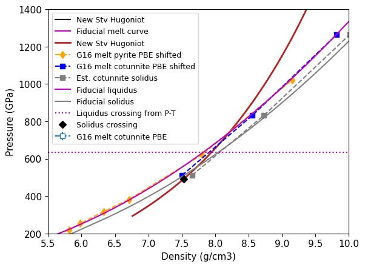
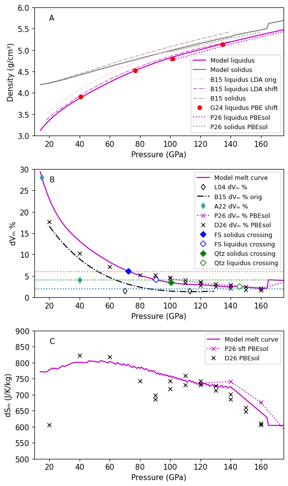
#print(stsmcsmooth.P,stsmcsmooth.rho_s)
#ind = np.where(stsmcsmooth.P >= Pt1)[0]
D26vavgmodel = (np.interp(D26mc[:,0],stsmcsmooth.P,stsmcsmooth.rho)+np.interp(D26mc[:,0],stsmcsmooth.P,stsmcsmooth.rho_s))/2
print(D26vavgmodel)
print(D26mc[:,4])
[3.79272327 4.14392018 4.43338327 4.68543056 4.79973897 4.90289838
4.99823372 5.08576262 5.17249323 5.25515358 5.34091987 5.41659078
4.79973897 4.90289838 4.99823372 5.08576262 5.17249323 5.25515358
5.34091987 5.41659078]
[606.1 822. 817.8 743.1 697.4 743.1 759.7 743.1 726.5 701.6 660.1 610.3
685. 718.2 730.6 730.6 714. 685. 647.6 606.1]
pmax=1000 # GPa
ind = np.where(stsmcsmooth.P >= Pt1)[0]
dH = 1.e-6*stsmcsmooth.T[ind]*(stsmcsmooth.S_l[ind]-stsmcsmooth.S_s[ind])
# 250K is nominal uncertainty on the PBE melt curve
dHu = 1.e-6*(stsmcsmooth.T[ind]+250)*(stsmcsmooth.S_l[ind]-stsmcsmooth.S_s[ind])
dHl = 1.e-6*(stsmcsmooth.T[ind]-250)*(stsmcsmooth.S_l[ind]-stsmcsmooth.S_s[ind])
pcross = [fs_startsol_P,fs_startliq_P,qtz_startsol_P,qtz_startliq_P]
dHx = np.interp(pcross,stsmcsmooth.P[ind],dH)
dHxu = np.interp(pcross,stsmcsmooth.P[ind],dHu)
dHxl = np.interp(pcross,stsmcsmooth.P[ind],dHl)
print(dHx)
print(np.mean(dHx),np.std(dHx))
print(np.mean(dHxu),np.std(dHxu))
print(np.mean(dHxl),np.std(dHxl))
print(np.mean(dHxu)-np.mean(dHx),np.mean(dHx)-np.mean(dHxl))
plt.plot(stsmcsmooth.P[ind], dH,'m-',label='Model melt curve Hₘ')
plt.errorbar(pcross,dHx,fmt='kD',yerr=(dHxu-dHxl)/2,label='FS & Qtz Hugoniot solidus, liquidus crossing' )
#ax[xi].plot([0,pmax],[ 1.414*Rgas/(sio2mol/1000), 1.414*Rgas/(sio2mol/1000)],'--',label='dS=sqrt(2)R')
#print(38.7/(sio2mol/1000))
#ax[xi].plot([120,140,160,180,200],np.asarray([44.2,44.5,40.6,34,25.9])/(sio2mol/1000),'mx:',label='P26 sft PBEsol')
#ax[xi].plot([100,120,140,160,180,200],np.asarray([38.7,44.2,44.5,40.6,34,25.9])/(sio2mol/1000),color=tab_colors[0],label='P26 sft PBEsol')
#ax[xi].plot([140,160,180,200,220,240],np.asarray([36.7,36.5,36.1,35.4,34.3,33.6])/(sio2mol/1000),color=tab_colors[1],label='P26 pyr PBEsol')
plt.xlabel('Pressure (GPa)')
plt.ylabel('Enthalpy of melting Hₘ=TdSₘ (MJ/kg)')
plt.legend()
plt.xlim(50,160)
plt.ylim(2,6)
print(fs_wiggle_P1,fs_wiggle_P2,fs_wiggle_P2-fs_wiggle_P1)
print(qtz_wiggle_P1,qtz_wiggle_P2,qtz_wiggle_P2-qtz_wiggle_P1)
print(fs_wiggle_T1,fs_wiggle_T2,fs_wiggle_T2-fs_wiggle_T1)
print(qtz_wiggle_T1,qtz_wiggle_T2,qtz_wiggle_T2-qtz_wiggle_T1)
print(pcross,pcross[1]-pcross[0],pcross[3]-pcross[2])
print(pcross[1]-fs_wiggle_P2,pcross[3]-qtz_wiggle_P2)
[4.22999288 4.29684194 4.30787927 4.29277801]
4.281873026320469 0.03045842128365519
4.470588594827271 0.026502358705009995
4.0931574578136685 0.0359639869557549
0.18871556850680182 0.18871556850680093
65.75879401343992 73.53695488293766 7.778160869497739
108.24162445130933 113.5797721161682 5.338147664858866
5023.448052463874 4526.263559926148 -497.1844925377254
5822.934634932949 4789.854780360964 -1033.0798545719854
[72.32862722602232, 90.5101601196313, 100.50773755669458, 145.80682496155464] 18.181532893608974 45.29908740486006
16.97320523669363 32.22705284538644
#plt.plot(eosdat_list[G24mclrho['id']].P_liquid,eosdat_list[G24mclrho['id']].rho_liquid+pbe_liquid_density_shift,'+:',color='red',label=G24mclrho['lab']+ ' shift')
rho_model = np.interp(eosdat_list[G24mclrho['id']].P_liquid,stsmcsmooth.P,stsmcsmooth.rho)
plt.plot(eosdat_list[G24mclrho['id']].P_liquid[0:4],(rho_model[0:4]/(eosdat_list[G24mclrho['id']].rho_liquid[0:4]+pbe_liquid_density_shift)-1)*100,'x:')
plt.ylim(-2,2)
plt.xlim(30,150)
plt.xlabel('Pressure (GPa)')
plt.ylabel('% difference')
plt.title('Difference between model liquidus (shifted K07 LDA thermal model) and G24 PBE with shift')
plt.show()
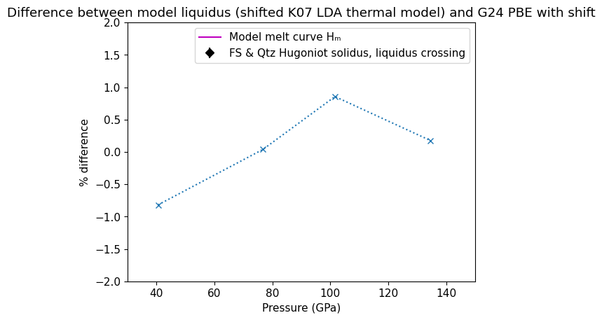
Print the fiducial melt curve#
This melt curve is stored in scripts/melt-curve.txt for use in all the other notebooks.
%%capture
##print(p1,p2)
# comment out %% capture for melt curve listing
pcheck=[]
tcheck=[]
print('P (GPa), T (K)')
for i in np.arange(1,5):
print(i,', ',sio2_mc_staticqtz.calcf(i))
pcheck.append(i)
tcheck.append(sio2_mc_staticqtz.calcf(i))
for i in np.arange(5,13):
print(i,', ',sio2_mc_staticlow.calcf(i))
pcheck.append(i)
tcheck.append(sio2_mc_staticlow.calcf(i))
xx=np.arange((p1-13))+13
for i in xx:
print(i,', ', sio2_mc_static.a[0]+sio2_mc_static.a[1]*np.power(i,sio2_mc_static.a[2])) # fit from above
pcheck.append(i)
tcheck.append(sio2_mc_static.a[0]+sio2_mc_static.a[1]*np.power(i,sio2_mc_static.a[2]))
xx = np.arange(p2-np.round(p1))+np.round(p1)+1 # GPa
for i in xx:
print(i,', ', 6.018*np.power((1+(i+202.338)/4.736e-04),0.5126)) # 2phase - confirmed with authors that this is correct 8/2025
pcheck.append(i)
tcheck.append(6.018*np.power((1+(i+202.338)/4.736e-04),0.5126))
# ADD 100 K to make the curve monotonically increasing
xx = np.arange(6000-np.round(p2))+np.round(p2)+1 # GPa
for i in xx:
print(i,', ', sio2_mc_G16mod.a[0]+sio2_mc_G16mod.a[1]*np.power(i,sio2_mc_G16mod.a[2])) # fit from above with continuity shift
pcheck.append(i)
tcheck.append(sio2_mc_G16mod.a[0]+sio2_mc_G16mod.a[1]*np.power(i,sio2_mc_G16mod.a[2]))
print(p1,p2)
10.477441985176059 512.8369433815569
for i in np.arange(20):
print(i,pcheck[i],stsmcsmooth.P[i],tcheck[i]-stsmcsmooth.T[i])
0 1 1.0 0.0
1 2 2.0 0.0
2 3 3.0 0.0
3 4 4.0 0.0
4 5 5.0 0.0
5 6 6.0 0.0
6 7 7.0 0.0
7 8 8.0 0.0
8 9 9.0 0.0
9 10 10.0 0.0
10 11 11.0 0.0
11 12 12.0 0.0
12 11.0 13.0 1600.3038465112986
13 12.0 14.0 1523.029734041097
14 13.0 15.0 1451.4573101694814
15 14.0 16.0 1384.869937384915
16 15.0 17.0 1322.6788531005022
17 16.0 18.0 1264.3943253956768
18 17.0 19.0 1209.6045284745778
19 18.0 20.0 1157.959780306005
plt.plot(stsmcsmooth.P,stsmcsmooth.T,'r-')
# '''Simons function f(x) = a[0] + a[1]*x^a[2]'''
ppp = np.arange(.5,7,.1)
ttt = sio2_mc_staticqtz.calcf(ppp)
plt.plot(ppp,ttt,'r-',label='Lowest pressure simons fit - this work')
pppa=ppp
ttta=ttt
print('P at 1999K =',np.interp(1999,ttt,ppp))
ppp = np.arange(4,15,.1)
ttt = sio2_mc_cst.calcf(ppp)
pppb=ppp
tttb=ttt
plt.plot(ppp,ttt,'m-',label='Lowest pressure simons fit - this work')
#plt.plot(gm24mc.P,gm24mc.T,'-',color='c',label='G24 MC 2phase PBE')
#ppp0 = ppp
#ttt0 = ttt
plt.ylim(1900,3500)
plt.xlim(0,25)
ppp = np.arange(10,120,1)
ttt = sio2_mc_stv.calcf(ppp)
plt.plot(ppp,ttt,'m--',label='fit stv')
pppc=ppp
tttc=ttt
#print(ppp,ttt)
if 1:
x1,y1=intersection(pppa,ttta,pppb,tttb)
p1=x1[0]
t1=y1[0]
print('Intersection (P,T) = ',p1,t1)
plt.plot(p1,t1,'mD',label='intersection point')
if 1:
x1,y1=intersection(pppb,tttb,pppc,tttc)
p1=x1[0]
t1=y1[0]
print('Intersection (P,T) = ',p1,t1)
plt.plot(p1,t1,'mD',label='intersection point')
if 1:
# DAC melt curve points
# stv melt curve Shen and Lazer 1995
plt.errorbar(eosdat_list[S95mcstv['id']].P,eosdat_list[S95mcstv['id']].T,\
xerr=eosdat_list[S95mcstv['id']].P_std,yerr=eosdat_list[S95mcstv['id']].T_std,\
fmt='d',color='wheat',mfc='grey',label=S95mcstv['lab'])
# Andrault et al. 2022 revised
plt.plot(eosdat_list[A22mc['id']].P,eosdat_list[A22mc['id']].T,'cd',mfc='grey',label=A22mc['lab'])
plt.plot(13.7,2800+273,'kD',label='Zhang et al. 1993 TP')
plt.plot(15,2900,'bD',label='Andrault et al. 2022 TP')
plt.plot(14.5,3100,'rD',label='Belonoshko & Drubovinsky 1995 TP')
P at 1999K = 0.6750534282549683
Intersection (P,T) = 4.3794737788828995 2679.3902737616863
Intersection (P,T) = 10.477441985176059 2901.752586925874
def curve2num(curvetype):
if curvetype == 'linear':
return 1
if curvetype == 'quadratic':
return 2
if curvetype == 'cubic':
return 3
if curvetype == 'fourthpoly':
return 4
def myform(x):
s = print('%12.6e' % x )
return str(s)
def format_matrix(matrix, environment="bmatrix", formatter=lambda s: '%12.6e' % s):
"""Format a matrix using LaTeX syntax"""
if not isinstance(matrix, np.ndarray):
try:
matrix = np.array(matrix)
except Exception:
raise TypeError("Could not convert to Numpy array")
if len(shape := matrix.shape) == 1:
matrix = matrix.reshape(1, shape[0])
elif len(shape) > 2:
raise ValueError("Array must be 2 dimensional")
body_lines = [" & ".join(map(formatter, row)) for row in matrix]
body = "\\\\\n".join(body_lines)
return f"""\\begin{{{environment}}}
{body}
\\end{{{environment}}}"""
def tomatrix(fit,var,label):
s1='% '+fit.filename+' \n'
s2='\\label{'+label+'} \n'
s3 = '\\Sigma'+var+' &=& '+format_matrix2(fit.cov) + ' \\\\'
print(s1+s2+s3)
def fnum(a):
s = ''
if abs(a) < 100000 and abs(a) > 1.e-5:
s += '%12.6f' % a
else:
s += '%12.6e' % a
return s
def fnum2(a):
return '%12.6e' % a
def xfrexp10(x):
exp = int(np.floor(np.log10(abs(x))))
if exp != 0:
s = str(x / 10**exp)[0:8]+' \\times 10^{'+str(exp)+'}'
else:
s = str(x / 10**exp)[0:8]
return s
def frexp10(x):
#if x != 0:
# exp = int(np.floor(np.log10(abs(x))))
#if exp != 0:
s = '\\textrm{'+fnum2(x)+'}'
#else:
# s = str(x)[0:8]
return s
#def format_matrix2(matrix, environment="bmatrix", \
# formatter=lambda s: '%12.6f' % s):
def format_matrix2(matrix, environment="bmatrix", \
formatter=frexp10):
"""Format a matrix using LaTeX syntax"""
if not isinstance(matrix, np.ndarray):
try:
matrix = np.array(matrix)
except Exception:
raise TypeError("Could not convert to Numpy array")
if len(shape := matrix.shape) == 1:
matrix = matrix.reshape(1, shape[0])
elif len(shape) > 2:
raise ValueError("Array must be 2 dimensional")
body_lines = [" & ".join(map(formatter, row)) for row in matrix]
# body_lines = [" & ".join(str(row)) for row in matrix]
body = "\\\\\n".join(body_lines)
return f"""\\begin{{{environment}}}
{body}
\\end{{{environment}}}"""
def formata(a):
s='['
for i in range(len(a)):
if max(abs(a)) < 100000 and min(abs(a)) > 1.e-5:
s += '%12.6f' % a[i]
else:
s += '%12.6e' % a[i]
if i < len(a)-1:
s += ', '
else:
s += ']'
return s
def formatstr(val,err,n):
#print(val,err,n)
#print(str(int(np.round(val*np.pow(10,n))))[-1:])
if str(int(np.round(val*np.pow(10,n))))[-1:] == '0':
sss=(str(np.round(val*np.pow(10,n))/np.pow(10,n))+'0 ± '+str(np.round(err*np.pow(10,n))/np.pow(10,n)))
else:
sss=(str(np.round(val*np.pow(10,n))/np.pow(10,n))+' ± '+str(np.round(err*np.pow(10,n))/np.pow(10,n)))
if n == 0:
sss=(str(int(np.round(val*np.pow(10,n))))+' ± '+str(int(np.round(err*np.pow(10,n)))))
return sss
## print covariance matrices for paper appendix
tomatrix(sio2_mc_staticqtz,'_{T}','eq:mc_bqtz_cov')
% SiO2_fithighqtzstatic_simons
\label{eq:mc_bqtz_cov}
\Sigma_{T} &=& \begin{bmatrix}
\textrm{5.164081e+05} & \textrm{-6.519741e+05} & \textrm{2.468882e+05} & \textrm{-2.907986e+04}\\
\textrm{-6.519741e+05} & \textrm{8.585698e+05} & \textrm{-3.335649e+05} & \textrm{3.998159e+04}\\
\textrm{2.468882e+05} & \textrm{-3.335649e+05} & \textrm{1.319619e+05} & \textrm{-1.603256e+04}\\
\textrm{-2.907986e+04} & \textrm{3.998159e+04} & \textrm{-1.603256e+04} & \textrm{1.968596e+03}
\end{bmatrix} \\
tomatrix(sio2_mc_cst,'_{T}','eq:mc_cst_cov')
% SiO2_fitcoesitestatic_simons
\label{eq:mc_cst_cov}
\Sigma_{T} &=& \begin{bmatrix}
\textrm{3.273871e+04} & \textrm{-1.027838e+04} & \textrm{1.037159e+03} & \textrm{-3.386336e+01}\\
\textrm{-1.027838e+04} & \textrm{3.284896e+03} & \textrm{-3.361838e+02} & \textrm{1.110411e+01}\\
\textrm{1.037159e+03} & \textrm{-3.361838e+02} & \textrm{3.481006e+01} & \textrm{-1.161202e+00}\\
\textrm{-3.386336e+01} & \textrm{1.110411e+01} & \textrm{-1.161202e+00} & \textrm{3.907114e-02}
\end{bmatrix} \\
tomatrix(sio2_mc_stv,'_{T}','eq:mc_stv_cov')
% SiO2_fitstvstatic_simons
\label{eq:mc_stv_cov}
\Sigma_{T} &=& \begin{bmatrix}
\textrm{1.617653e+09} & \textrm{-1.580098e+09} & \textrm{5.621037e+03}\\
\textrm{-1.580098e+09} & \textrm{1.543443e+09} & \textrm{-5.491046e+03}\\
\textrm{5.621037e+03} & \textrm{-5.491046e+03} & \textrm{1.954174e-02}
\end{bmatrix} \\
tomatrix(sio2_mc_G16mod,'_{T}','eq:mc_g16mod_cov')
% SiO2_fitG16mod_simons
\label{eq:mc_g16mod_cov}
\Sigma_{T} &=& \begin{bmatrix}
\textrm{2.242432e+06} & \textrm{-1.055374e+06} & \textrm{2.842907e+01}\\
\textrm{-1.055374e+06} & \textrm{4.981449e+05} & \textrm{-1.344001e+01}\\
\textrm{2.842907e+01} & \textrm{-1.344001e+01} & \textrm{3.629615e-04}
\end{bmatrix} \\